ZGCM Team1,2
1中关村学院 2中关村人工智能研究院
基础模型持续推进数学推理和 agent 问题求解的前沿，但高昂的计算需求和封闭的训练方案，使更广泛的学术界在很大程度上无法参与这一进展。在本研究中，我们提出 ZGCM-1：一个完全开放的 7B 稠密基础模型，以极高的数据、系统和算法效率从头训练而成。ZGCM-1 建立在一个核心前提之上：小型模型无法被动记住开放网络，但可以将审慎的内部思考与主动的外部工具使用相结合，突破参数容量的限制。为在 256K 上下文中支持这一范式，我们开发了一套端到端、高效率的开放训练方案：（1）架构与系统协同设计：交错排列的门控 SWA 与全局 attention，以及稳定的 FP8 Muon 优化器；（2）渐进式课程与 MDP 中期训练：上下文依次扩展至 16K、64K 和 256K，并将交互轨迹重新表述为马尔可夫决策过程。此外，我们建立了一套 AI 原生研发工作流，由 agent 群自主管理集群运维、数据整理和快速诊断评估。广泛的评估表明，ZGCM-1-7B 在通用基准上与 7B 模型家族中的模型具有竞争力。在若干具有挑战性的数学推理和 agent 搜索测试中，它仍能与规模大几个数量级的前沿模型竞争，例如 Qwen3-235B-A22B 和 GLM-5.1。我们还表明，预训练设计使 16K 预训练达到给定损失所需时间的效率提高约 4.2 倍。在完整开发生命周期中，我们提炼出八项可付诸实践的实证发现，涉及架构扩展、SFT 质量筛选、长上下文泛化以及 agent 联合训练动态。为促进社区研究，我们开源预训练、中期训练和后训练阶段的模型权重、中间 checkpoint、训练代码、各阶段数据及数据方案，以及 W&B 日志。
代码：https://github.com/zgcagi/ZGCM-1
模型：https://huggingface.co/zgcagi/ZGCM-1-7B
数据：https://huggingface.co/datasets/zgcagi/ZGCM-1-Data
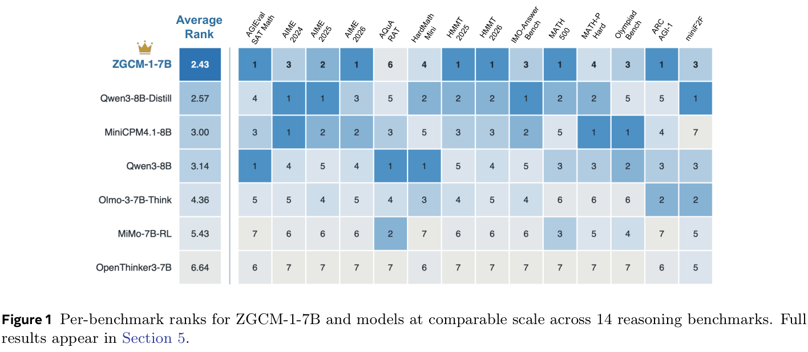
通讯作者：Jiyan He（hejiyan@zgci.ac.cn）。
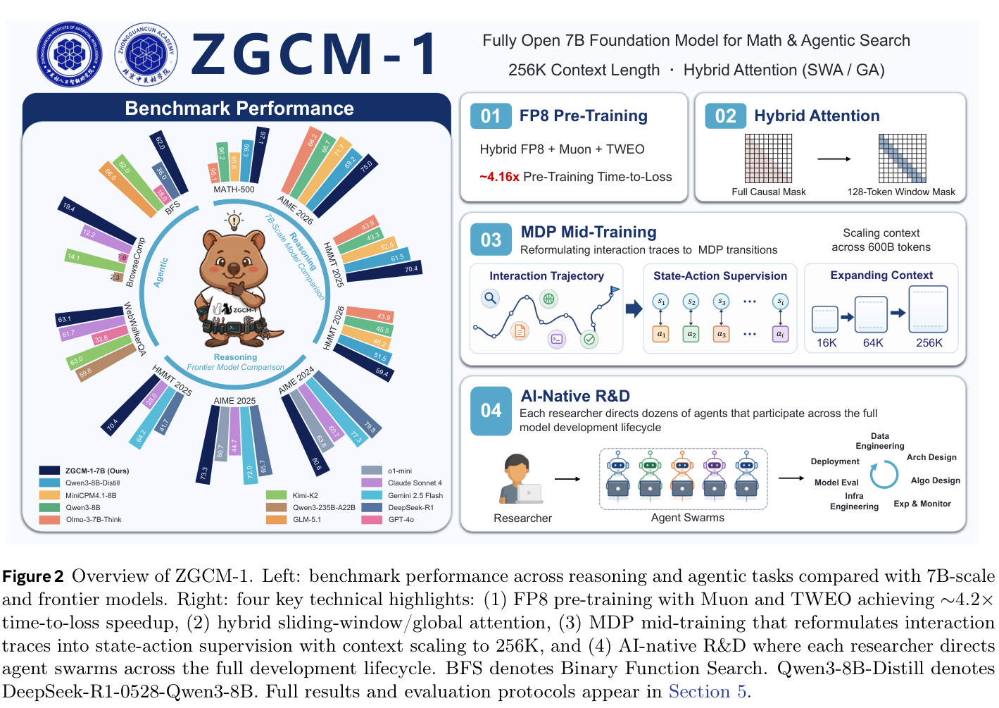
基础模型正在以惊人的速度发展，推进长程推理（DeepSeek-AI, 2026; Kimi Team, 2026）和现实环境中工具增强的 agent 能力（GLM-5-Team, 2026; Qwen Team, 2026; OpenAI, 2026; Anthropic, 2026）的前沿。尽管取得了这些突破，基础研究仍受到两个实际瓶颈的制约：
我们的动机与核心论点。为突破这些壁垒，我们提出 ZGCM-1：一个在透明、开放科学范式下从头训练的 7.39B 稠密基础模型。我们质疑高级智能必须依赖庞大参数规模的观念，并围绕一个直接的论点展开设计：
小型模型本质上受静态参数容量约束，但可以通过审慎的内部思考和主动的外部探寻这一双引擎突破限制。
ZGCM-1 将长程 CoT 推理与自主工具使用相结合，以弥补知识缺口：主动收集网络证据、与系统终端交互，以及分析移除了符号信息的二进制程序，而不是依赖对开放网络的被动记忆。
高效率的开放方案。为使训练和推理能够在学术计算预算内实现，我们构建了一条支持 256K 上下文的高效全栈流水线：
实证可行性。20 个标准基准上的评估验证了我们的论点（图 2，第 5 节）：
AI 原生研发。我们将研究者指导的 AI agent 整合进模型开发全生命周期，涵盖数据处理、实验、评估与部署。共享的 agent 运行框架将人类上下文材料与经过验证的脚本、工作流及调试经验结合，使 agent 能够执行任务、检查反馈并迭代。我们的原子能力评估套件提供快速诊断反馈，指导开发。九位核心贡献者的评估刻画了这一工作流的收益与局限：实验、监控和部署的自主程度评分较高，而架构与学习算法设计仍更依赖人类判断和指导。
实证发现与开放科学。在开发生命周期中，我们提炼了八项实证发现，涵盖架构效率、训练动态、后训练数据选择、长上下文泛化、agent 联合训练，以及 AI 原生研发的收益与局限。为支持社区研究，我们在 https://github.com/zgcagi/ZGCM-1 发布预训练、中期训练和后训练阶段的模型权重、中间 checkpoint、训练代码与配置、数据方案、W&B 日志和评估运行框架。
ZGCM-1 采用仅解码器 Transformer 架构，使用 GQA（GQA; Ainslie et al. 2023）、RMSNorm（Zhang and Sennrich, 2019）、SwiGLU 激活（Shazeer, 2020）和 RoPE（RoPE; Su et al. 2024）。模型约有 73.9 亿参数、32 层 Transformer、4,096 的隐藏维度、11,008 的 SwiGLU 中间维度、32 个查询头和 8 个键值头（每头维度 128），最大上下文长度为 256K token。
架构采用混合因果 attention 骨干，以 5:1 的局部／全局比例交错排列门控（Qiu et al., 2025）SWA（SWA; Child et al. 2019; Beltagy et al. 2020）与全局 attention；这一比例此前已由 Gemma 3（Gemma Team, 2025）用于生产规模部署。32 层中，27 层使用窗口为 128 token 的门控 SWA，5 层使用全局因果 attention。全局层位于第 6、12、18、24 和 30 层，形成五个重复模块，每个模块由五个局部层接一个全局层组成，末尾再接两个局部层。模型还应用以 RMSNorm 实现的 QK 归一化（Dehghani et al., 2023），以及旋转比例为 0.33 的 Partial RoPE。
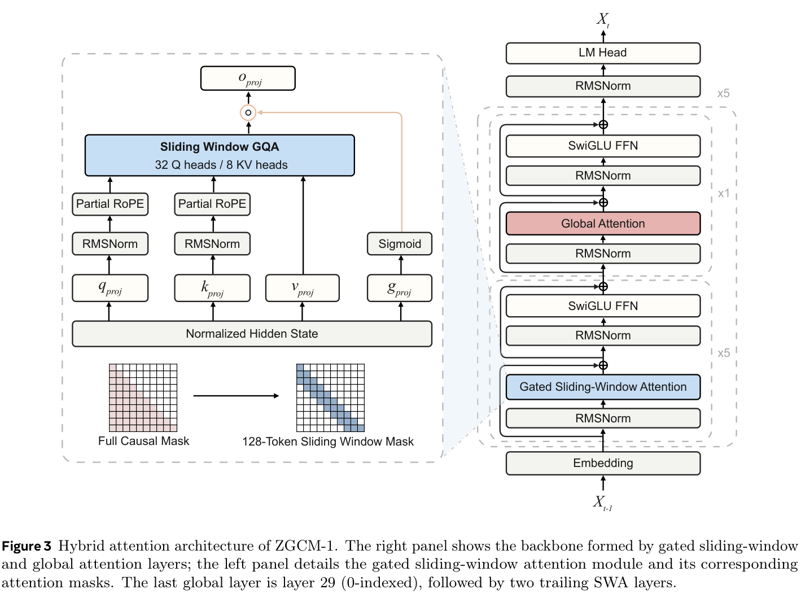
如图 3 所示，对于归一化隐藏状态 \(h\)，门控 SWA 模块并行计算查询、键、值和门控投影。查询与键分支应用 RMS 归一化和 Partial RoPE。若 \(A_{\mathrm{SWA}}(q, k, v)\) 表示 128-token 滑动窗口 GQA 的输出，则 gated attention 输出为：
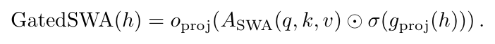
学习得到的 sigmoid 门控在输出投影之前，逐元素调制局部 attention 输出。全局 attention 层不使用这一门控，而是关注完整上下文，使信息能够流动到局部窗口之外。
为选择生产使用的 attention 配置，我们比较全 attention、采用 FlashAttention-2 的 GQA（Flash-GQA; Ainslie et al. 2023; Dao 2023）、MLA（DeepSeek-AI, 2024），以及局部／全局比例为 1:1、3:1 和 5:1 的三种 SWA 配置。所有配置均在八张 H100 GPU 上，以相同训练预算、4,096 序列长度训练 10B token。
我们通过最后 50 个训练步骤的平均损失衡量优化质量，通过每张 GPU 每秒处理的 token 数衡量训练效率。如图 4a 所示，SWA 5:1 达到最高吞吐量（9,566 token/s/GPU），同时末段损失与全 attention 基线相同（1.93）。SWA 3:1 在吞吐量略低的情况下达到最低末段损失（1.92）。MLA 带来显著的吞吐量损失（7,645 token/s/GPU），却未改善损失。我们在生产模型中采用 SWA 5:1：它在末段损失具有竞争力的同时，提供了观测到的最高吞吐量。生产架构还包含 128-token 窗口、QK RMS 归一化、GQA 和局部输出门控。
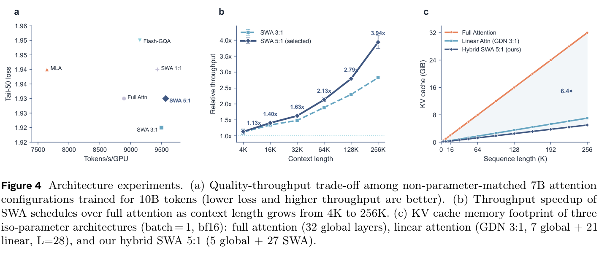
我们还在相同的 7B 骨干网络上，保持每步 token 预算不变，将上下文长度从 4K 增加至 256K，比较全 attention、SWA 3:1 和 SWA 5:1。图 4b 表明，SWA 5:1 相对于全 attention 的吞吐量优势随上下文增长而扩大，从 4K 时的 1.13 倍增至 256K 时的 3.94 倍。SWA 3:1 的加速程度介于两者之间。这一不断扩大的差距使门控 SWA 非常适合长上下文训练与推理；在这些场景中，全 attention 成为主要的计算瓶颈。
混合架构在推理时显著节省内存。27 个 SWA 层的 KV cache 仅保留固定的 128-token 窗口，只有 5 个全局层保存完整序列，因此每 token 的 KV 占用从全 attention 的 128 KiB 降至 20 KiB。图 4c 比较三种等参数架构：全 attention（32 个全局层，7.39B）、线性 attention 基线（GDN 3:1，7 个全局层加 21 个线性层，7.47B），以及我们的混合 SWA 5:1。在 256K 上下文下，全 attention 需要 32.0 GiB KV cache，GDN 3:1 需要 7.0 GiB，而我们的混合架构仅需 5.0 GiB（比全 attention 缩小 6.4 倍）。由于自回归 decoding 受内存带宽限制，更小的 KV 占用直接转化为更高的 decoding 吞吐量，使这一架构对经常使用长上下文的长推理与 agent 搜索工作负载尤其高效。
预训练由两个连续阶段组成。如图 5 所示，通用预训练通过两个数据阶段建立广泛的语言、知识、数学与代码能力。随后，中期训练保留全序列因果语言建模目标，同时引入更密集的推理、指令和 agent 数据，并将上下文从 16K 逐步扩展至 64K 和 256K。附录 A 报告详细的语料构建、课程实验和训练配置。
我们首先使用一个以约 30B token 训练的 0.3B 参数代理模型，搜索数据混合方案。训练损失以及知识、代码和数学评估信号指导对候选混合方案的迭代调整，从而降低在目标模型规模下探索混合方案的成本；这一做法遵循代理模型混合优化的更广泛实践（Liu et al., 2024; Team Olmo, 2025）。根据混合搜索结果，我们在跨领域能力与损失收敛效率之间进行平衡，确定最终训练数据方案。
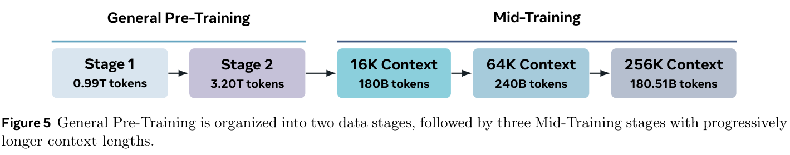
网络数据。经过整理的英文网络语料（Wang et al., 2025）是主要来源，并辅以受控比例的中文网络数据。我们保留上游文档级质量分数，以及通过验证驱动过滤得到的质量分层，并将接受的文本和语言元数据规范化为统一文档表示。
学术与 OCR 数据。我们结合经教育价值过滤的 PDF 文本视图（Kydlíček et al., 2025），以及 Ai2（Allen Institute for AI, 2025）发布、通过 olmOCR 流水线（Poznanski et al., 2025）生成的 OCR 科学内容。对于直接从 arXiv 收集的科学论文，内部流水线提取并清洗文本，同时保留训练所需的技术内容。
代码数据。代码混合覆盖代码密集型网页和开源仓库文件（NVIDIA Corporation, 2025a,b）。我们将结构化发布内容转换为文本视图、规范化文件级元数据，并清理仓库附属产物和非源码内容，同时保留程序、技术文档和代码解释文本。
数学数据。我们优先选用数学语料中质量较高的层级（Zhou et al., 2026），并结合分类器过滤的网络数学内容及遵循 SmolLM2 数学数据方案的教材集合（Allal et al., 2025）。处理过程结合启发式清洗、质量模型选择和保留公式的规范化，使 LaTeX 表达式仍 embedding 周围的推理上下文，类似 Proof-Pile-2（Azerbayev et al., 2023）。
LaTeX 论文。我们将 RedPajama-1T（Together Computer, 2023）的 arXiv LaTeX 源码子集与过滤后的近期 TeX 源码结合。接受的文本视图恢复主要文本流、过滤格式错误或内容匮乏的文档，并保留方程和科学文档结构。
专门推理数据。面向推理的材料作为独立来源类别维护，而不并入通用网络或数学数据池。我们使用 Nemotron-Pretraining-Specialized-v1（NVIDIA Corporation, 2025c），验证来源 schema 和版本，选择指定的高质量推理视图，并将其作为独立控制的混合组成部分纳入阶段 2。
每一来源类别均接受针对来源的语言和质量过滤，并按需进行文本提取或仓库清理。接受的文档规范化为统一记录 schema，物化为带版本的分片，并登记在来源清单中。随后，我们使用 GLM-5.1 tokenizer 对分片进行分词和索引。在根据最终数据方案抽样各来源之前，跨阶段去重从阶段 2 候选中排除所有阶段 1 内容。
最终通用预训练语料在阶段 1 包含约 0.99T token，在阶段 2 包含约 3.20T token。如图 6 上方环形图所示，网络数据在两个阶段均为最大来源。阶段 2 提高代码与数学的相对贡献，引入专门推理成分，并维持对学术、OCR 和 LaTeX 内容的广泛覆盖。
近期工作表明，在固定 token 预算内，按难度排序训练样本而非随机采样，可以提高预训练效率（Zhang et al., 2026）。我们将包含 0.99T token 的阶段 1 作为课程式预训练阶段。通用语言文档按照词汇复杂度从低到高呈现，代码和数学则单独交错加入。受控比较和定性示例见附录 A.4 和 A.4.1。我们发现，对于通用语言数据，词汇复杂度排序可以以较低成本在语料规模上计算。但它无法可靠反映代码或数学的内在难度。因此，我们仅对非代码、非数学数据应用这一排序，
（接上页）移除通常属于损坏或乱码文本的极端高复杂度 outlier 样本，并独立交错加入代码和数学。在 7B 探测实验中，这一计划将代码 BPB 从 1.99 降至 0.81，将数学 BPB 从 0.97 降至 0.94，而通用基准 BPB 增加 0.03 至 0.09。数学比较使用匹配的评估采样，而代码差距仅表明方向，并非匹配条件下的效应大小。排序仅用于阶段 1，后续阶段在完整混合数据上训练，不采用复杂度排序。
发现 1（课程式预训练）：词汇复杂度是通用语言文本的一种低成本、语料规模排序信号，却不能很好地代理代码与数学难度，因为表面统计反映的是样板内容，而非算法或推理深度。由此形成的计划对通用语言文档排序，同时独立交错加入代码与数学，改善了两个技术领域的 BPB，并以通用领域拟合损失增加 0.03–0.09 BPB 为代价，获得集中于模型目标领域的收益。
优化。我们使用 NVIDIA Megatron Core（NVIDIA Corporation, 2026）在 H100 GPU 上进行分布式训练。矩阵参数使用 Muon（Jordan et al., 2024; Liu et al., 2025）优化：动量 0.9、谱缩放、五步 Newton–Schulz 迭代、恒定学习率 \(2 \times 10^{-4}\)、权重衰减 0.1、gradient 裁剪 1.0。标量参数使用 Adam。
数值精度。矩阵乘法采用 Transformer Engine 混合 FP8（前向 E4M3、反向 E5M2）（Micikevicius et al., 2022）和延迟缩放；缩放因子根据 1,024 步历史中的最大绝对值更新。其他所有操作保留 BF16 或 FP32 精度。TWEO（Liang et al., 2025）作为激活正则化器抑制极端中间值，补充延迟缩放规则。16K 生产训练持续达到约 585 模型 TFLOP/s/GPU，即相对于 H100 BF16 稠密峰值 989 TFLOP/s，约 60% 的 BF16 等效 MFU。完整并行配置见附录 A.1。
发现 2（TWEO 支持 FP8 预训练）：抑制中间激活 outlier 对 FP8 训练稳定性至关重要；将延迟缩放与 TWEO（Liang et al., 2025）正则化结合，可防止数值发散，同时在规模化训练中保持 60% 的 BF16 等效 MFU。
训练效率。我们相对于一个可比的 OLMo 3 风格 7B BF16/AdamW 基线（Team Olmo, 2025），估算 16K 预训练达到给定损失所需时间。四项因素产生贡献：SWA 5:1 在 16K 时相对于全 attention 带来 1.4 倍吞吐量提升（第 2.2 节，图 4）；FP8 精度与系统配置贡献约 1.5 倍；Muon 相比 AdamW 提供约 1.8 倍达到给定损失所需步数的效率；根据探索性的 7B 证据，Pre-LN 贡献估计为 1.1 倍的数据效率。相乘得到：
1.4 × 1.5 × 1.8 × 1.1 ≈ 4.2。
这大致表明，16K 预训练达到给定损失所需时间的效率提高了四倍。
发现 3（预训练效率提升）：混合 SWA（1.4 倍）、FP8 混合精度系统（1.5 倍）、Muon 优化器（1.8 倍）和 Pre-LN（1.1 倍）的协同设计，相对于标准 BF16/AdamW 基线，累计使 16K 预训练达到给定损失所需时间缩短约 4.2 倍。
中期训练是面向能力的继续预训练。我们对整个数据池去重，以提高 token 效率并控制重复内容（Lee et al., 2022）。从得到的 2.86T-token 候选池中，我们构建一个包含 600.51B token 的采样计划，按 16K、64K 和 256K 上下文阶段组织。
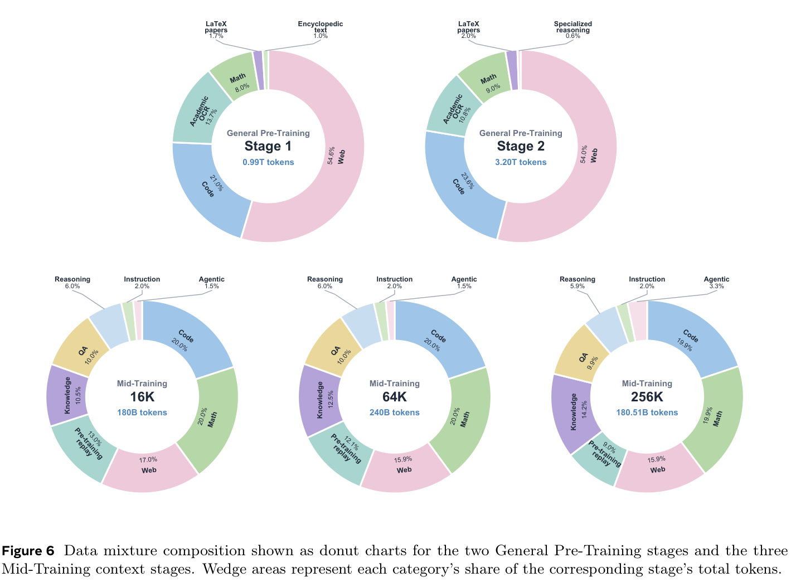
遵循 Qwen2.5-1M（Yang et al., 2025b）的多阶段上下文扩展方式，最大序列长度在这些阶段中逐步增加；其他开放技术报告则在最后一个预训练阶段一次性扩展上下文（LLM-Core-Team Xiaomi, 2025; Yang et al., 2025a）。后续各阶段保持累积式组成，而非替代较短序列：64K 阶段包含长度不超过 16K 的 180.89B token，以及处于 16K–64K 范围的 59.11B token；256K 阶段则结合长度不超过 16K 的 127.81B token、处于 16K–64K 范围的 21.72B token，以及超过 64K 的 30.98B token。
16K 阶段以标准上下文长度训练，均衡混合代码、数学、知识与推理。64K 阶段引入更长的文档和推理序列，同时保留大量较短上下文数据。256K 阶段加入超长文档、跨文档信息和长程 agent 轨迹，并继续回放 16K 和 64K 长度范围内的数据，以保留对常规上下文任务的覆盖。
图 6 下方环形图概括顶层能力混合比例。代码与数学在整个课程中分别保持接近 20%，以保留核心编程与推理能力。随着上下文长度增加，知识数据从 10.50% 增至 14.23%，agent 数据从 1.50% 增至 3.30%，提高长文档、工具交互和多步骤任务样本的密度。预训练回放从 13.00% 降至 9.00%，但仍予以保留，以便在引入更高密度数据时维持广泛覆盖。网络、问答、推理和指令数据在三个阶段之间相对稳定。精确的长度统计和构建细节见附录 A.5。
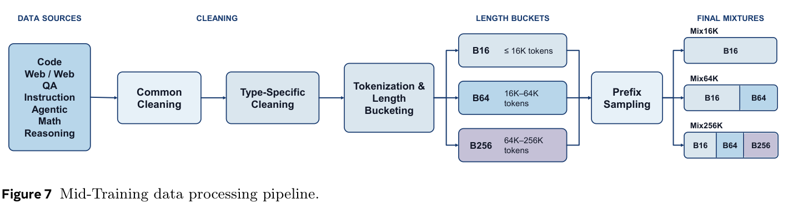
推理来源被规范化为统一 schema，并根据问题是否自包含、答案证据和推理价值，分流到接受、重写、待处理、留出或拒绝视图。经规则清洗的样本构成主要数据池。
对于有价值但原始轨迹不适合训练的问题，我们将其提取为独立题目，由教师模型重建或改进；只有经过解析有效性、完整性、模板与来源泄漏风险、重复性和可训练性检查之后，才予以接受。这将问题本身的价值与上游推理轨迹质量分离。细节见附录 A.5.1。
我们收集了大规模指令语料，包括来自 Tulu 和 FLAN 的数据（Lambert et al., 2024; Wei et al., 2022）。这些样本转换为适合预训练的原始上下文。流水线保留合理的短标签任务，将存在翻译风险的子集分流至模型审查，并将部分单轮样本重写为多轮讨论。这些转换在保留全序列训练目标的同时，提高对对话状态和顺序推理的覆盖。进一步的构建细节见附录 A.5.1。
中期训练的 agent 数据覆盖通用交互轨迹与从软件工程任务收集的轨迹。我们保留高质量的完整交互，并遵循 agent 继续预训练（Su et al., 2025），将通用轨迹重新表述为类似马尔可夫决策过程、以状态为条件的下一动作预测样本，将完整轨迹上下文与更密集的局部决策监督结合。对于软件工程轨迹，我们进行考虑执行结果的过滤，并保留学习规划、工具使用及迭代改进所需的交互上下文。详细构建过程、过滤标准和语料统计见附录 A.5.2。对于每一来源类别，我们使用图 8 所示的 agent 驱动、自迭代治理过程，开发并验证针对来源的处理方案。
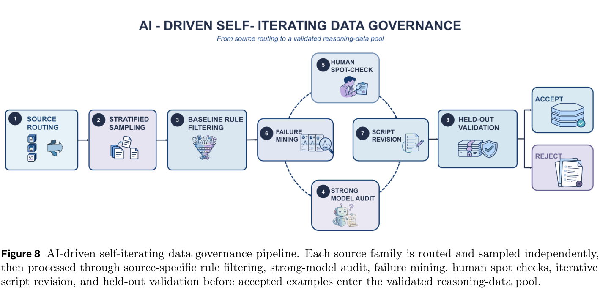
所有中期训练阶段均对原始上下文采用全序列因果语言建模（不同于 SFT 仅对 assistant 的监督，详见第 4.1.3 节）。通过调整全局 batch size（16K、64K 和 256K 分别为 768、192 和 48），我们在三个阶段中均保持每个优化器步骤约 12.6M token。学习率为 \(10^{-4}\)；256K 阶段使用 10M 的 RoPE base，并完全重计算激活。我们评估了直接 256K 路径（30B token）和分阶段路径（先以 64K 训练 10B，再以 256K 训练 20B）；分阶段路径达到略低的最终损失。完整配置见附录 A.1。
由此得到的 C1 分阶段训练，其损失轨迹和学习率计划概括于图 9。
在通用预训练与中期训练全过程中，我们持续监控训练动态、数值稳定性、硬件与系统状态、训练效率和资源利用率。
为监控通用预训练期间的能力发展，我们直接使用固定能力套件评估已保存的基础 checkpoint，覆盖知识、问答、数学、推理、代码及基本符号操作。评估前不进行 SFT 或其他后训练适配。同时，我们监控 PPL、BPB、归一化损失、关键 token 的 logits，以及反映训练动态的优化器相关统计。这些信号有助于诊断优化与系统问题、检测能力退化，并为调整数据混合、课程及阶段转换提供依据。
Checkpoint 级评估揭示了不同领域能力发展的异质性。知识和问答基准在监控的训练区间总体改善，但改善速度和发生时间在基准间不同。数学与代码能力同样提升，尽管收益集中在不同区间，并伴随更大的短期波动。因此，我们将这些曲线视为领域相关学习动态的描述性诊断，而非普遍单调趋势的证据。所有基准的详细轨迹见附录 A.2。
例如，在恢复训练任务后，连续吞吐量监控发现：在约 80 步的匹配窗口之间，模型吞吐量从每 GPU 585 TFLOP/s 逐步降至 554 TFLOP/s。释放重叠缓冲区缓解但未消除这一下降。加入每 100 次迭代定期清理 CUDA 分配器缓存和垃圾回收后，吞吐量恢复稳定至每 GPU 585 模型 TFLOP/s。这一修复已部署到生产训练循环。
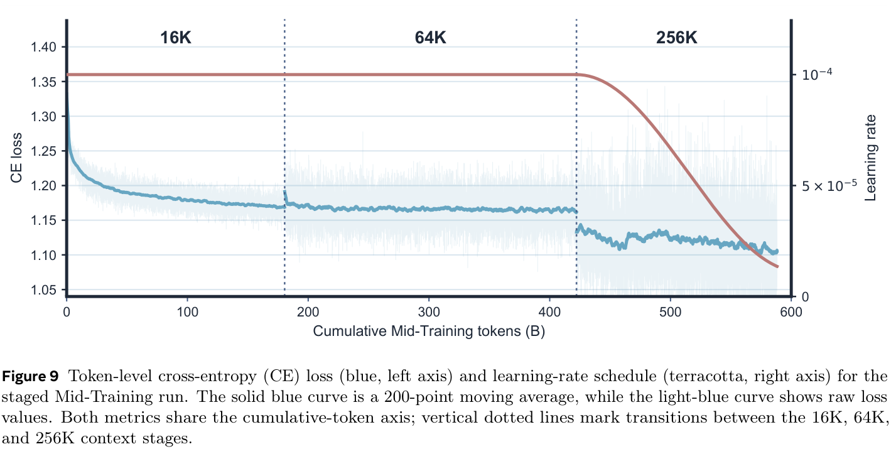
作为补充，短程 SFT 探测在轻量监督适配后评估连续训练里程碑。与上述直接基础 checkpoint 评估不同，这一探测衡量的是监督适配后能够激发的下游能力。结果见附录 A.3。
后训练流水线由 SFT 和随后进行的混合强化学习（RL）组成。SFT 使用通用与 agent 数据建立回答模式，RL 则在数学与代码等单领域任务上带来能力提升。更多数据与实现细节见附录 B。
图 10 概括我们的 SFT 数据整理流水线。我们将语料组织为通用与 agent 数据，通用数据包括通用指令和推理样本。在选择混合方案前，所有样本均规范化为统一的消息和工具 schema，并检查结构有效性、回答正确性和工具轮次一致性。随后通过候选训练的评估，确定兼顾能力覆盖、长推理监督和通用—agent 联合训练的混合方案。最后，我们移除基准污染，将保留样本转换为打包序列，使用仅对 assistant 的损失掩码，并按长度分流。
SFT 语料结合开源数据集与内部蒸馏数据，共包含 4,921,933 个样本，组织为通用与 agent 数据。如表 1 所示，通用数据覆盖指令遵循、知识、数学、科学、代码、对话与推理，agent 数据则面向与工具及外部环境的交互。
数据质量过滤与分层整理。我们建立多阶段数据整理流水线，将确定性启发式规则与基于模型的质量评分结合。初始阶段的规则检查系统性移除结构缺陷，包括缺失对话轮次、无效角色分配、重复生成、提示模板泄漏和格式错误的推理轨迹。规则过滤后，我们部署一个基于模型的评估器，该评估器以人工标注的先导基准校准，从多个教学与技术维度给候选样本评分：教育价值、逻辑合理性、逐步
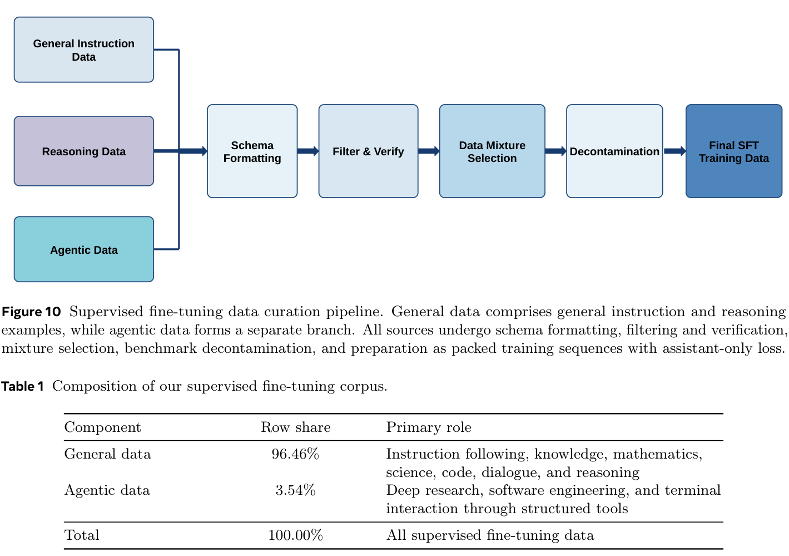
（接上页）推理连贯性、事实一致性和安全合规性。我们不采用僵硬的二元阈值，而是通过固定的多标准评分规则将样本归入离散质量层级。优先保留提供密集监督和多样能力覆盖的高分样本，将边界样本送入辅助验证流水线，并严格丢弃噪声、信息量低或高风险条目。拒绝回答样本接受专门隔离和过滤，以消除过度拒绝和依赖环境的伪影，同时保留必要的安全对齐。候选训练之间的实证比较表明，积极的分层过滤——删去约 50% 的原始 SFT 候选——总体上优于在未经整理的完整语料上训练，但并非所有单项基准都朝同一方向变化。过滤强度的受控三路比较见附录 B.1.1。
发现 4（后训练中数据质量胜过数量）：SFT 质量比数据量更重要。在受控比较中，删去约一半候选池，将六个基准的平均分从 67.78 提高至 68.83；收益集中在推理（BBH（Suzgun et al., 2023）提高 10.10），损失则局限于部分任务。因此，我们优先采用可靠、高价值监督，而非最大化保留样本数。
去污染。为防止基准污染并确保泛化指标可靠，我们实施严格的跨基准去污染协议。整个候选 SFT 语料使用 8-gram 匹配滑动窗口，与所有下游评估和验证集进行比对清理。任何训练样本与任一评估提示或参考回答的 8-gram 重叠超过 50%，都会从语料中永久清除。
能力平衡与推理混合。为确定跨领域能力的最佳数据组成，我们在候选 SFT 模型上进行受控混合消融扫描，覆盖数学、代码生成、多轮对话与复杂指令遵循。扫描发现，不成比例地扩大长 CoT 轨迹，会引入冗长偏置并损害指令遵循。
我们系统性进行迭代网格校准，协调长篇推理、直接回答问答和严格格式指令的比例，得到均衡的 Pareto 最优混合方案。
发现 5（长 CoT 的权衡与校准）：长 CoT 监督的效用并非单调：训练混合中过量加入扩展推理轨迹，会降低通用指令遵循表现。动态校准数据混合比例能缓解这一退化，在不损害长 CoT 推理收益的情况下保持强指令遵循能力。
统一的思考与直接回答监督。最终 SFT 语料有意交错加入思考样本（在结构化推理标签中包含明确、端到端的推理链）和不思考样本（给出简洁、即时的回答）。这一双模式设计使同一套模型权重能够根据用户指定的系统指令或运行预算，在充分思考与高效零样本回答之间动态切换。关键的是，中间 checkpoint 评估确认，联合训练带来正向跨模式迁移：接触结构化推理轨迹，直接提高了不思考回答在代码、数学与逻辑推理基准上的准确率（详见附录 B.4）。
Agent SFT 数据包含三个并行分支：深度研究、软件工程和终端交互。在数据构建期间，我们将各任务类别的训练 schema 与下游推理环境对齐，包括系统指令、消息角色、工具定义、结构化调用、观察结果的位置和最终回答约定。实验表明，schema 不匹配会显著降低下游 agent 表现。Deep Research schema 见附录 B.2.1。在这些对齐的 schema 内，多轮动作—观察轨迹监督工具选择、信息收集、环境交互和最终回答生成。
工具协议验证。在各 agent 分支中，我们将针对来源的工具调用格式及旧格式转换为目标结构化表示。我们验证参数结构、工具调用与观察配对、调用标识符唯一性以及 assistant 完整终止，并移除与目标协议冲突的文本指令。自动修复仅限于调用与结果对应关系明确的样本；不可恢复的样本被丢弃。稳定的样本标识符保留来源记录、质量决策和协议修订之间的关联。
Agent 行为也依赖指令遵循、推理和领域知识。因此，我们比较了先以通用能力数据训练、再继续以 agent 数据训练的顺序计划，与在整个 SFT 中交错加入通用和 agent 样本的联合计划。联合计划带来更强的下游表现，并用于最终训练。
发现 6（agent 训练中通用数据的必要性）：仅用 agent 数据微调会降低交互保真度，因为 agent 熟练程度本质上依赖广泛的通用能力。与通用指令数据联合训练，为逐步推理和精确约束遵循提供不可或缺的基础，带来显著更好的 agent 表现。
深度研究轨迹。我们收集 20,217 条多步骤研究轨迹，并规范化到共享交互环境，使用 search 与 visit 工具。结构化工具调用和环境观察采用统一表示。我们移除包含无效参数、动作—观察不匹配或工具返回格式错误的轨迹。每条接受的轨迹均提供对齐的思考和不思考形式。
软件工程轨迹。我们通过收集的仓库交互轨迹构建软件工程分支。基于执行的子集覆盖可执行环境中的仓库交互，而无执行子集则提供仓库理解、文件定位、
（接上页）工具选择和补丁规划的监督。经过针对子集的过滤与评分后，我们保留 30,014 条基于执行的轨迹和 30,000 条无执行轨迹，并将其映射到 GLM-5.1 结构化工具格式。构建流水线详见附录 B.2.2。
终端轨迹。我们通过多条独立收集路径，从终端任务环境中收集终端 agent 轨迹。每个任务在隔离的 Docker 环境中运行，使用持久 shell 和结构化 bash 工具，随后由环境侧验证器检查。我们在各收集路径内部按任务—环境级别对轨迹去重，并规范化针对来源的推理和工具协议。为后续受控 Agent-SFT 实验，我们物化一个配对来源视图，包含 22,309 条轨迹及一个 15,748 条验证成功轨迹的子集。该视图是消融实验产物，不是主 SFT 训练使用的终端子集。更多细节见附录 B.2.3。
SFT 将所有样本渲染为统一的 GLM-5.1 对话格式，并仅对 assistant 进行监督。根据模式，目标要么包含明确的推理轨迹和随后的最终回答，要么是不暴露推理轨迹的直接回答。assistant 的推理、回答及结构化工具调用计入损失；system 和 user 消息以及工具观察保持为被掩码的上下文。这一思考／不思考混合目标训练推理、回答生成与动作选择，而不教模型复现环境反馈。打包与损失掩码验证详见附录 B.3。
我们训练两种针对长度的 SFT 变体，最大序列长度分别为 65,536 和 262,144 token。64K 变体训练八个 epoch；256K 变体在 19.46B 打包 token 上训练十个 epoch，并用于发布模型。两次训练的全局 batch size 均为 48。矩阵参数采用逐层 Muon（Liu et al., 2025），标量参数采用 Adam；学习率从 \(1 \times 10^{-4}\) 余弦衰减至 \(1 \times 10^{-6}\)，无 warmup，权重衰减 0.01，gradient 裁剪 1.0。对应优化动态见图 11。
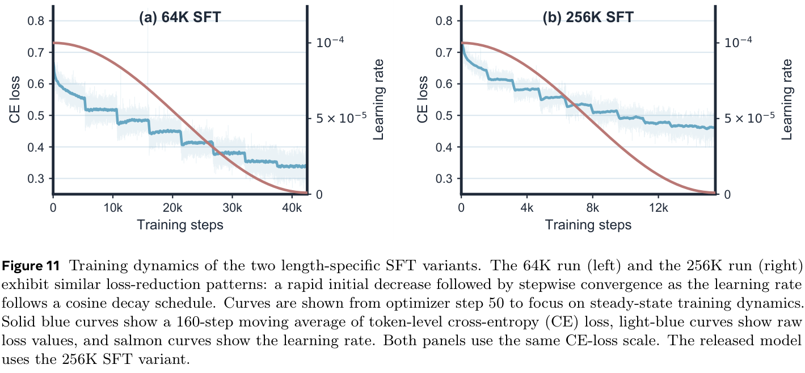
发现 7（长 agent 中期训练免除超长 SFT 的需求）：中期训练建立的长上下文基础，使仅用中等长度 SFT 数据，就能在 256K 规模上可靠激发稳健推理与 agent 行为。这有效免除了后训练期间昂贵的 256K 长推理轨迹需求，表明较短序列监督足以激活并外推中期训练建立的长序列能力。
我们构建覆盖数学、代码和通用能力任务的混合强化学习语料。通过初始策略的 rollout 估计提示难度，并移除模型已经经常解决的问题，将训练集中于仍能提供有效学习信号的提示。
奖励遵循各领域的评估语义。数学采用二元答案正确性奖励，代码根据可执行测试通过比例获得奖励。通用能力任务使用相应的正确性或指令遵循标准。无效或被截断的回答不获得正奖励。在最大回答长度 64K token 下，我们还探索将结果奖励与 GRPO（Shao et al., 2024）的参考策略 KL 正则化及轻微长度惩罚结合，以稳定长程优化。KL 项控制策略漂移，长度惩罚则减少过长或截断回答带来的奖励噪声（Yu et al., 2025），支持可靠的多步骤推理，同时避免鼓励不必要的回答扩张。
优化。我们使用 GRPO（Shao et al., 2024）优化策略。每个问题采样多个回答，并在对应回答组内构造相对优势。奖励方差为零的组无法提供有效相对学习信号，因此动态采样在训练中将其过滤并替换（Yu et al., 2025）。actor 学习率为 \(2 \times 10^{-6}\)。
采样与 rollout。实验中探索了两种采样规模。第一种每步采样 24 个问题、每题生成 16 个回答，得到 24 × 16 = 384 条轨迹。第二种采样 384 个问题、每题生成 8 个回答，每步最多得到 384 × 8 = 3,072 条轨迹。为支持长程推理，rollout 在总计 98,304 token 的提示—回答上下文中，最多允许生成 65,536 个新 token；actor microbatch 使用相同 token 预算。
我们以思考模式评估 ZGCM-1。报告结果使用发布的 256K SFT checkpoint（第 4.1 节）。非 agent 和网络环境深度研究运行的采样 temperature 为 1.0，top-p 为 1.0。总上下文预算为 262,144 token，包含最多 4,096 个提示 token 和最多 258,048 个生成 token。非 agent 基准除非指定其他汇总规则，否则报告 32 次运行的平均 pass@1。对于 DeepSeek-R1-0528-Qwen3-8B 和 MiniCPM4.1-8B，GPQA-Diamond、HumanEval+、MBPP+ 及 LiveCodeBench v6 为四次运行均值；MMLU 为单次运行，IFEval 使用 Prompt Strict 准确率。
非 agent 套件覆盖四类共 20 个基准。数学与抽象推理包括 MATH-500（Lightman et al., 2023）、AIME 2024/2025/2026（Mathematical Association of America, 2026）、HMMT 2025/2026（Harvard–MIT Mathematics Tournament, 2026）、AGIEval SAT Math（Zhong et al., 2023）、AQuA-RAT（Ling et al., 2017）、HARDMath-mini（Fan et al., 2024）、IMO-AnswerBench（Luong et al., 2025）、MATH-P-Hard（Huang et al., 2025）及 OlympiadBench 的纯文本数学子集（He et al., 2024），另包含 miniF2F 上的形式化定理证明（Zheng et al., 2022）和 ARC-AGI-1 上的抽象网格推理（Chollet, 2019）。代码生成采用 HumanEval+ 和 MBPP+（Liu et al., 2023），以及 LiveCodeBench v6（Jain et al., 2024）。知识采用 MMLU（Hendrycks et al., 2021）和 GPQA-Diamond（Rein et al., 2024）；指令遵循通过 IFEval（Zhou et al., 2023）衡量。
网络环境深度研究使用启用思考的 ReAct 策略（Yao et al., 2023），最多执行 64 个搜索与阅读步骤。Binary Function Search 使用独立的、基于 Ghidra（National Security Agency, 2019）的
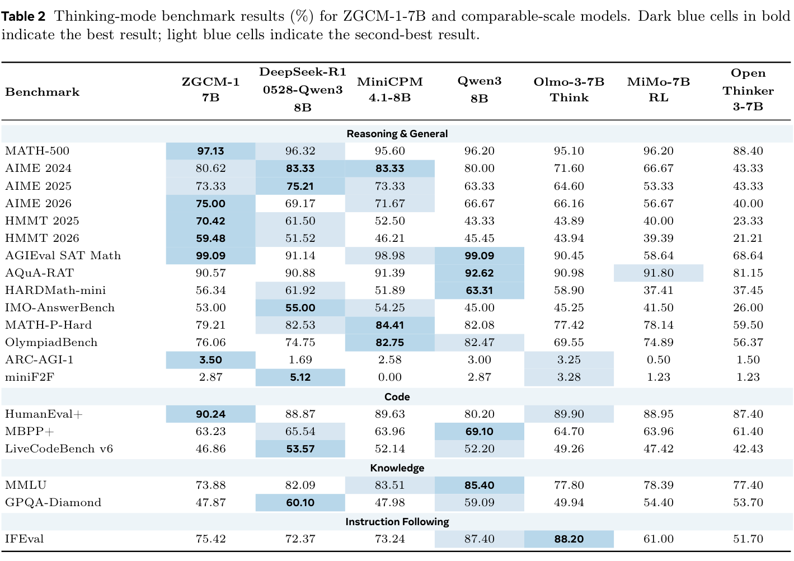
（接上页）交互协议和 decoding 配置。两个运行框架均见附录 C。除 WebDancer 外的网络基线数值取自公开技术报告和模型发布；WebDancer 与 Binary Function Search 基线则在我们的共享运行框架下评估。
我们将 ZGCM-1 与六个 7B–8B 规模的推理模型比较。如表 2 所示，比较涵盖推理与通用能力、代码、知识和指令遵循四类共 20 个基准。
我们在两种 agent 研究场景中评估 ZGCM-1：开放网络信息查找和二进制程序分析。
网络环境深度研究。网络环境深度研究要求 agent 迭代搜索、检查并综合外部证据。表 3 使用 WebWalkerQA（Wu et al., 2025b）、BrowseComp（Wei et al., 2025）和 GAIA（Mialon et al., 2024）的报告结果，比较专门研究 agent、配备工具的开放权重模型与专有系统，并以 WebDancer（Wu et al., 2025a）作为专门研究 agent 基线。ZGCM-1 在 WebWalkerQA 上获得 63.09%，在 BrowseComp 上获得 19.43%，在 GAIA 纯文本任务上获得 42.52%。
二进制函数搜索。这一基准评估 agent 能否仅根据行为描述，在移除符号的 ELF 二进制文件中找出目标函数。我们从覆盖数千个开源 C/C++ 项目的广泛收集工作中构建基准，在存在适当候选时，从每个项目中选取若干语义上有意义的函数。目前经过验证的数据池包含来自数百个项目的超过 11,000 个任务。评估使用 50 个任务的子集，通过随机
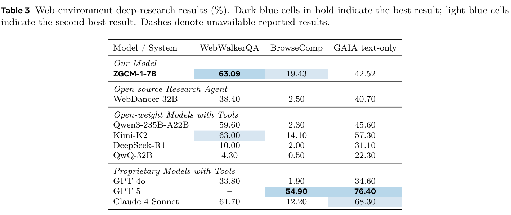
（接上页）从 10 个代表项目（tmux、tree、GNU Wget2、XZ Utils、YAJL、zlib、libuv、libgit2、nm 和 Lua）各采样五个任务组成。这 10 个项目全部从训练数据中留出，不出现在任何训练划分中；因此，没有评估任务来自训练中见过的项目。我们计划公开发布 Binary Function Search 数据集，以支持工具辅助二进制分析的可复现研究。
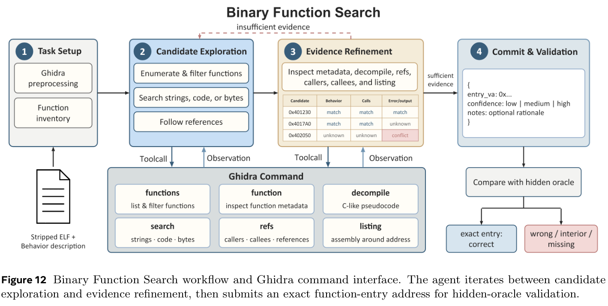
如图 12 所示，agent 接收一份行为描述，其中包含控制流、被调用函数、常量、错误处理或输出方面的线索。通过结构化、基于 Ghidra 的接口，它枚举函数、搜索字面量和错误消息、反编译候选、追踪引用并检查汇编。Agent 将这些证据与描述比较，迭代缩小候选集合，随后提交精确的函数入口 ELF 虚拟地址。我们依据由对应未移除符号二进制文件构建的隐藏真值验证提交地址。仅当提交地址精确匹配函数入口 ELF 虚拟地址时，才判为正确；错误或缺失提交均判为错误。更多构建与评分细节见附录 C.2。ZGCM-1-7B 达到 62% 准确率，远超同等规模基线（Qwen3-8B 为 12%，其他模型为 0%）。它与更大的前沿模型仍具有竞争力，接近 GLM-5.1（66%），并优于 DeepSeek-R1 和 GPT-4o。
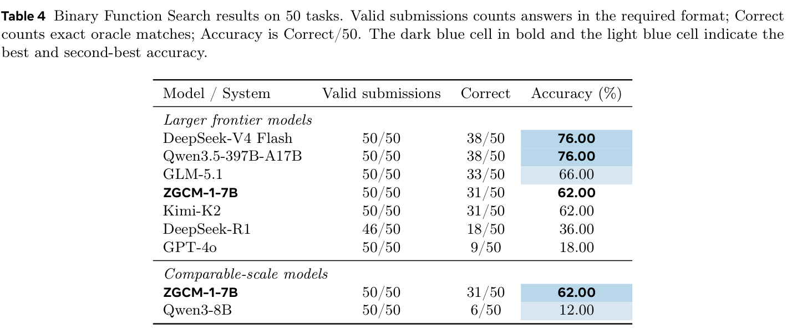
我们在整个模型开发生命周期中采用 AI 原生方法。如图 13 所示，每位研究者指导基于 LLM 的 agent，参与开发的所有阶段，从数据工程与架构设计，到学习算法、实验、基础设施、评估和部署。研究者讨论产生人类上下文材料（对话、会议记录、决策、计划），完成的 agent 工作则产生可复用经验（经过验证的脚本、工作流、检查清单、调试历史）。两条信息流都进入共享 agent 运行框架，为每个 agent 提供有效自主操作所需的上下文、技能和工具。
数据清洗。AI agent 参与完整的数据处理流水线。给定一组质量要求，agent 首先编写启发式过滤与转换脚本，再在目标语料上执行。处理后，agent 检查所得数据组成和分布统计，验证输出是否符合预定标准。若发现差异，agent 自动迭代处理脚本，改进规则与阈值，直到数据分布满足所有要求。
集群管理。数据处理、模型训练和推理均在统一集群平台运行，用户通过同一网页界面提交任务、检查日志并管理开发机器。为使 AI agent 能够自主操作该平台，我们与 agent 迭代协作开发了一套完整技能包。该包提供用于创建开发机器、提交训练任务、修改资源配置、流式获取日志和过滤状态字段的结构化接口。凭借这些技能，agent 能够独立启动实验、监控进展、从日志提取并诊断失败，以及调整超参数或资源分配，无需人工干预。
自动研究。当前基于 LLM 的 agent 具备足够的长程任务能力，配备文献搜索和集群管理工具后，可以开展半自主研究。Agent 能够探索替代算法和超参数配置、启动训练、分析结果并迭代，无需持续人工监督。我们在 ZGCM-1 开发中常规使用这一自动研究工作流。例如，agent 剖析了存储集群的数据传输特性，并针对性调整训练框架 I/O 流水线，完全通过自主 agent 工作实现了显著训练提速。
评估。模型评估是 AI 原生研发工作流的一部分，作为开发工具，而不仅是最后阶段的考核。我们使用原子能力评估（ACE），这是一个细粒度诊断基准，可快速刻画模型能力并反馈到训练迭代。ACE 将 2,503 个探测样例组织为 18 类、183 项原子能力。在标准设置下，完整 ACE 运行约需两至三分钟，提供
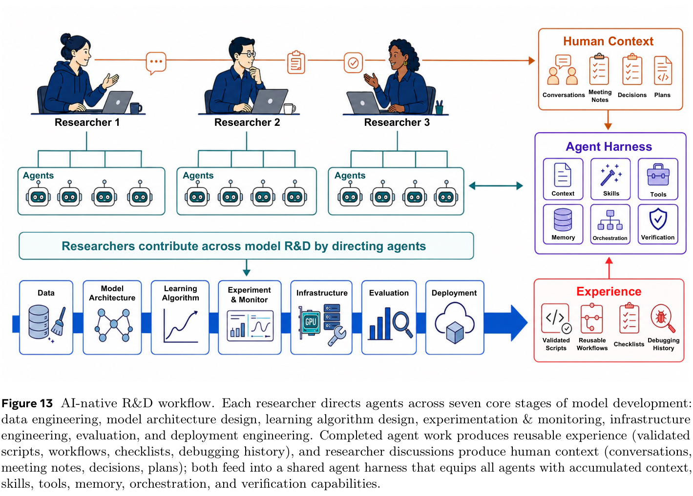
（接上页）类别、能力和探测样例层面的初步强弱画像。这使 ACE 非常适合消融研究中的频繁评估：使用不同数据混合、目标、超参数或推理配置训练的模型，可以高效比较，并将退化定位到受影响的能力。由此 ACE 闭合评估与开发之间的循环，识别哪些干预有效、哪些导致退化、哪里仍需调整。我们通过人类与 LLM 迭代协作构建基准。LLM 辅助能力拆解、探测样例生成、边界情况发现和评分器实现，研究者则定义能力边界、审计生成产物并批准纳入。基准执行完全自动化：可用规则表达的探测样例由确定性程序评分；无法可靠表达为可执行规则的正确性，则由独立模型按照预定义评分准则判断。附录 D 详述分类体系、评分政策、验证与结果。
人类上下文。研究者与开发者频繁进行项目讨论，虽然信息稀疏，却包含关键设计决策、待办事项和技术理由。我们将自研 agent 平台 ZGent 整合到团队日常会议渠道。ZGent 记录并提炼每次讨论内容，随时间积累上下文，并自动将产生的任务派发给适当 agent 执行。这弥合了人类讨论与 agent 行动之间的间隙，显著减少将会议结论转化为具体工程工作的开销。
AI4AI（AI for AI）指使用 AI 系统构建、评估和改进其他 AI 系统。为评估 AI agent 在研发生命周期中能承担多少责任，九位核心贡献者分别根据表 5 的五级准则，对 11 类任务评分，得到 99 个评分。L4/L5 的分界是自主形成目标：L4 在人类定义的目标内独立执行，L5 则还会识别研究目标并协调跨阶段工作。这一准则为有序等级，因此均值间的小差异没有实际意义（附录 E 提供针对任务的标准和全部个体评分）。
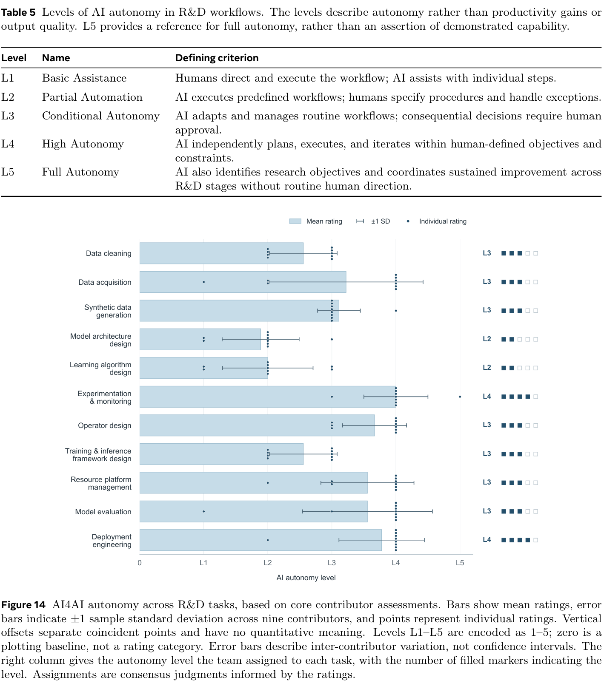
不同任务的自主程度并不均衡（图 14）。团队通过共识为各任务分级：实验与监控、部署工程为 L4；模型架构设计与学习算法设计为 L2，二者都没有收到高于 L3 的评分；其余七类任务为 L3。贡献者认为，操作类任务的自主执行空间显著大于设计类任务。
这些属于贡献者判断，并非标准化测量。99 个评分中只有一个为 L5，没有任务被评为高于 L4。由于分配的等级介于 L2 至 L4，按任务描述自主程度，比为整个工作流指定单一成熟度等级更合适。
发现 8（AI 自主程度取决于任务）：共享上下文、可复用技能和集成工具，让 agent 能够在有限人工干预下迭代，但自主程度并不均衡：实验与部署等操作类任务达到 L4，模型架构与学习算法设计则处于 L2，且从未超过 L3。
本报告介绍了 ZGCM-1，一个完全开源的 7.39B 稠密基础模型，针对 256K 上下文中的复杂数学推理与 agent 搜索优化。ZGCM-1 挑战了前沿推理必须依赖数千亿参数的普遍假设，并建立在明确核心论点之上：小型模型可以将审慎内部推理与主动外部工具使用结合，突破内在参数容量限制。
为在可获得的学术计算资源上实现这一愿景，我们开发了端到端、高效率的开放方案：
广泛评估表明，ZGCM-1-7B 在具有挑战性的基准上，在小于 10B 的模型中取得有竞争力或最先进的结果（例如 AIME 2026 为 75.0%，WebWalkerQA 为 63.1%，Binary Function Search 为 62.0%），能与规模大几个数量级的模型正面竞争。为支持透明、可复现的开放科学研究，预训练、中期训练和后训练阶段的模型权重、中间训练 checkpoint、数据方案、遥测日志和评估套件均公开提供。
尽管推理和 agent 表现具有竞争力，ZGCM-1 仍存在若干可识别的局限：
我们的发现为高效开源智能的若干高影响方向铺平了道路：
项目负责人。Jiyan He（hejiyan@zgci.ac.cn）。
核心贡献者（按字母顺序）。Guang Liang, Hao Liu, Haoxiang Guan, Jinbo Sun, Junyi Guo, Wenjun Feng, Yantai Xie, Yifei Shen。
贡献者（按字母顺序）。Bin Shao, Chuyang Wei, Kai Chen, Kexin Zhou, Minghang Zhu, Shuxin Zheng, Tie-Yan Liu, Taine Zhao, Wenhui Zhu, Xueyin Xu, Xiaoqing Zhang, Yatao Li, Yuxuan Ren。
Joshua Ainslie, James Lee-Thorp, Michiel de Jong, Yury Zemlyanskiy, Federico Lebrón, and Sumit Sanghai. GQA：从多头 checkpoint 训练广义多查询 Transformer 模型。 arXiv 预印本 arXiv:2305.13245, 2023. https://arxiv.org/abs/2305.13245.
Loubna Ben Allal, Anton Lozhkov, Elie Bakouch, Gabriel Martín Blázquez, Guilherme Penedo, Lewis Tunstall, Andrés Marafioti, Hynek Kydlíček, et al. SmolLM2：小模型走向大能力——以数据为中心的小语言模型训练， 2025. https://arxiv.org/abs/2502.02737.
Allen Institute for AI. olmOCR-peS2o. Hugging Face 数据集发布, 2025. https://huggingface.co/datasets/allenai/olmOCR-pes2o-0225.
Anthropic. 利用 Claude 发现密码学弱点。 博客文章, 2026 年 7 月. https://www.anthropic.com/research/discovering-cryptographic-weaknesses.
Zhangir Azerbayev, Hailey Schoelkopf, Keiran Paster, Marco Dos Santos, Stephen McAleer, Albert Q. Jiang, Jia Deng, Stella Biderman, and Sean Welleck. Llemma：面向数学的开放语言模型， 2023. https://arxiv.org/abs/2310.10631.
Iz Beltagy, Matthew E Peters, and Arman Cohan. Longformer：长文档 Transformer。 arXiv 预印本 arXiv:2004.05150, 2020. https://arxiv.org/abs/2004.05150.
Rewon Child, Scott Gray, Alec Radford, and Ilya Sutskever. 使用稀疏 Transformer 生成长序列。 arXiv 预印本 arXiv:1904.10509, 2019. https://arxiv.org/abs/1904.10509.
François Chollet. 论智能的度量。 arXiv 预印本 arXiv:1911.01547, 2019. https://arxiv.org/abs/1911.01547.
Tri Dao. FlashAttention-2：通过更好的并行性与工作划分实现更快 attention。 arXiv 预印本 arXiv:2307.08691, 2023. https://arxiv.org/abs/2307.08691.
DeepSeek-AI. DeepSeek-V2：强大、经济、高效的 MoE 语言模型。 arXiv 预印本 arXiv:2405.04434, 2024. https://arxiv.org/abs/2405.04434.
DeepSeek-AI. DeepSeek-V4：迈向高效百万 token 上下文智能。 arXiv 预印本 arXiv:2606.19348, 2026. https://arxiv.org/abs/2606.19348.
Mostafa Dehghani, Josip Djolonga, Basil Mustafa, Piotr Padlewski, Jonathan Heek, et al. 将视觉 Transformer 扩展至 220 亿参数。 arXiv 预印本 arXiv:2302.05442, 2023. https://arxiv.org/abs/2302.05442.
Jingxuan Fan, Sarah Martinson, Erik Y. Wang, Kaylie Hausknecht, Jonah Brenner, Danxian Liu, Nianli Peng, Corey Wang, and Michael P. Brenner. HARDMath：应用数学挑战问题的基准数据集。 arXiv 预印本 arXiv:2410.09988, 2024. https://arxiv.org/abs/2410.09988.
Gemma Team. Gemma 3 技术报告。 arXiv 预印本 arXiv:2503.19786, 2025. https://arxiv.org/abs/2503.19786.
GLM-5-Team. GLM-5：从氛围编程到 agent 工程。 arXiv 预印本 arXiv:2602.15763, 2026. https://arxiv.org/abs/2602.15763.
Harbor Framework Team. Harbor：在容器环境中评估和优化 agent 与模型的框架。 软件发布, 2026. https://github.com/harbor-framework/harbor.
Harvard–MIT Mathematics Tournament. HMMT 二月锦标赛档案。 竞赛档案, 2026. https://www.hmmt.org/www/archive/problems. 2025 年及 2026 年二月锦标赛; 访问日期 2026-08-06.
Chaoqun He, Renjie Luo, Yuzhuo Bai, Shengding Hu, Zhen Leng Thai, et al. OlympiadBench：通过奥林匹克级双语多模态科学问题促进 AGI 的挑战性基准。 arXiv 预印本 arXiv:2402.14008, 2024. https://arxiv.org/abs/2402.14008.
Dan Hendrycks, Collin Burns, Steven Basart, Andy Zou, Mantas Mazeika, et al. 衡量大规模多任务语言理解。 发表于国际学习表征会议, 2021. https://arxiv.org/abs/2009.03300.
Kaixuan Huang, Jiacheng Guo, Zihao Li, Xiang Ji, Jiawei Ge, Wenzhe Li, Yingqing Guo, Tianle Cai, Hui Yuan, Runzhe Wang, et al. MATH-Perturb：以困难扰动评测 LLM 的数学推理能力。 arXiv 预印本 arXiv:2502.06453, 2025. https://arxiv.org/abs/2502.06453.
Naman Jain, King Han, Alex Gu, Wen-Ding Li, Fanjia Yan, et al. LiveCodeBench：代码 LLM 的全面无污染评估。 arXiv 预印本 arXiv:2403.07974, 2024. https://arxiv.org/abs/2403.07974.
Carlos E. Jimenez, John Yang, Alexander Wettig, Shunyu Yao, Kexin Pei, Ofir Press, and Karthik Narasimhan. SWE-bench：语言模型能解决真实世界的 GitHub issue 吗？ 发表于第 12 届国际学习表征会议, 2024. https://openreview.net/forum?id=VTF8yNQM66.
Keller Jordan, Yuchen Jin, Vlado Boza, Jiacheng You, Franz Cesista, Laker Newhouse, and Jeremy Bernstein. Muon：用于神经网络隐藏层的优化器。 博客文章, 2024. https://kellerjordan.github.io/posts/muon/. 访问日期 2026-09-08.
Kimi Team. Kimi k3：开放的前沿智能。 arXiv 预印本 arXiv:2607.24653, 2026. https://arxiv.org/abs/2607.24653.
Hynek Kydlíček, Guilherme Penedo, and Leandro von Werra. FinePDFs-Edu. Hugging Face 数据集发布, 2025. https://huggingface.co/datasets/HuggingFaceFW/finepdfs-edu.
Nathan Lambert, Jacob Morrison, Valentina Pyatkin, Shengyi Huang, Hamish Ivison, et al. Tulu 3：推进开放语言模型后训练的前沿。 arXiv 预印本 arXiv:2411.15124, 2024. https://arxiv.org/abs/2411.15124.
Katherine Lee, Daphne Ippolito, Andrew Nystrom, Chiyuan Zhang, Douglas Eck, Chris Callison-Burch, and Nicholas Carlini. 对训练数据去重使语言模型更好。 发表于第 60 届计算语言学协会年会论文集, 页 8424–8445, 2022. https://arxiv.org/abs/2107.06499.
Guang Liang, Jie Shao, Ningyuan Tang, Xinyao Liu, and Jianxin Wu. TWEO：没有极端 outlier 的 Transformer 让 FP8 训练与量化变得简单。 arXiv 预印本 arXiv:2511.23225, 2025. https://arxiv.org/abs/2511.23225.
Hunter Lightman, Vineet Kosaraju, Yura Burda, Harri Edwards, Bowen Baker, et al. 让我们逐步验证。 arXiv 预印本 arXiv:2305.20050, 2023. https://arxiv.org/abs/2305.20050.
Wang Ling, Dani Yogatama, Chris Dyer, and Phil Blunsom. 通过生成解题理由进行程序归纳：学习求解并解释代数应用题。 发表于第 55 届计算语言学协会年会论文集, 页 158–167, 2017. doi: 10.18653/v1/P17-1015. https://aclanthology.org/P17-1015/.
Jiawei Liu, Chunqiu Steven Xia, Yuyao Wang, and Lingming Zhang. ChatGPT 生成的代码真的正确吗？对 LLM 代码生成的严格评估。 发表于《神经信息处理系统进展》, 2023. https://arxiv.org/abs/2305.01210.
Jingyuan Liu, Jianlin Su, Xingcheng Yao, Zhejun Jiang, Guokun Lai, et al. Muon 可扩展至 LLM 训练。 arXiv 预印本 arXiv:2502.16982, 2025. https://arxiv.org/abs/2502.16982.
Qian Liu, Xiaosen Zheng, Niklas Muennighoff, Guangtao Zeng, Longxu Dou, Tianyu Pang, Jing Jiang, and Min Lin. RegMix：将语言模型预训练数据混合视为回归。 arXiv 预印本 arXiv:2407.01492, 2024. https://arxiv.org/abs/2407.01492.
LLM-Core-Team Xiaomi. MiMo：释放语言模型的推理潜力——从预训练到后训练。 arXiv 预印本 arXiv:2505.07608, 2025. https://arxiv.org/abs/2505.07608.
Thang Luong, Dawsen Hwang, Hoang H. Nguyen, Golnaz Ghiasi, Yuri Chervonyi, Insuk Seo, Junsu Kim, Garrett Bingham, Jonathan Lee, Swaroop Mishra, et al. 迈向稳健的数学推理。 发表于 2025 年自然语言处理实证方法会议论文集, 2025. https://aclanthology.org/2025.emnlp-main.1794/.
Mathematical Association of America. 美国数学邀请赛。 数学竞赛, 2026. https://artofproblemsolving.com/wiki/index.php/AIME_Problems_and_Solutions. 2024、2025 和 2026 年竞赛；题目与解答由 Art of Problem Solving 存档; 访问日期 2026-09-08.
Mike A. Merrill, Alexander G. Shaw, Nicholas Carlini, Boxuan Li, Harsh Raj, et al. Terminal-Bench：在命令行界面的困难真实任务上评测 agent。 arXiv 预印本 arXiv:2601.11868, 2026. https://arxiv.org/abs/2601.11868. 介绍含 89 个任务的 Terminal-Bench 2.0 基准；发布公告见 https://www.tbench.ai/news/announcement-2-0.
Grégoire Mialon, Clémentine Fourrier, Craig Swift, Thomas Wolf, Yann LeCun, and Thomas Scialom. GAIA：通用 AI 助手基准。 发表于国际学习表征会议, 2024. https://arxiv.org/abs/2311.12983.
Paulius Micikevicius, Dusan Stosic, Neil Burgess, Marius Cornea, Pradeep Dubey, et al. 用于深度学习的 FP8 格式。 arXiv 预印本 arXiv:2209.05433, 2022. https://arxiv.org/abs/2209.05433.
National Security Agency. Ghidra 软件逆向工程框架。 软件发布, 2019. https://github.com/NationalSecurityAgency/ghidra.
NVIDIA Corporation. Nemotron-CC-Code-v1. Hugging Face 数据集发布, 2025a. https://huggingface.co/datasets/nvidia/Nemotron-CC-Code-v1.
NVIDIA Corporation. Nemotron Pretraining Code v1 and v2. Hugging Face 数据集发布, 2025b. https://huggingface.co/datasets/nvidia/Nemotron-Pretraining-Code-v2. 另见 Nemotron-Pretraining-Code-v1.
NVIDIA Corporation. Nemotron-Pretraining-Specialized-v1. Hugging Face 数据集发布, 2025c. https://huggingface.co/datasets/nvidia/Nemotron-Pretraining-Specialized-v1.
NVIDIA Corporation. Megatron-LM 和 Megatron Core：面向大规模 Transformer 模型训练的 GPU 优化库。 软件仓库与文档, 2026. https://github.com/NVIDIA/Megatron-LM. 访问日期 2026-08-06.
OpenAI. 介绍 SWE-bench Verified。 OpenAI 博客, 2024. https://openai.com/index/introducing-swe-bench-verified/. 访问日期 2026-09-08.
OpenAI. GPT-5.6：随你的抱负扩展的前沿智能。 模型发布, 2026 年 7 月. https://openai.com/index/gpt-5-6/.
Jake Poznanski, Aman Rangapur, Jon Borchardt, Jason Dunkelberger, Regan Huff, Daniel Lin, Christopher Wilhelm, Kyle Lo, and Luca Soldaini. olmOCR：用 VLM 释放 PDF 中的数万亿 token， 2025. https://arxiv.org/abs/2502.18443.
Valentina Pyatkin, Saumya Malik, Victoria Graf, Hamish Ivison, Shengyi Huang, Pradeep Dasigi, Nathan Lambert, and Hannaneh Hajishirzi. 泛化可验证的指令遵循。 发表于《神经信息处理系统进展》数据集与基准分会, 2025. https://arxiv.org/abs/2507.02833.
Zihan Qiu, Zekun Wang, Bo Zheng, Zeyu Huang, Kaiyue Wen, Songlin Yang, Rui Men, Le Yu, Fei Huang, Suozhi Huang, Dayiheng Liu, Jingren Zhou, and Junyang Lin. LLM 的 gated attention：非线性、稀疏性与无 attention sink， 2025. https://arxiv.org/abs/2505.06708.
Qwen Team. Qwen3.8-Max：代码与协作的新标杆。 博客文章, 2026 年 8 月. https://qwen.ai/blog?id=qwen3.8.
David Rein, Betty Li Hou, Asa Cooper Stickland, Jackson Petty, Richard Yuanzhe Pang, et al. GPQA：研究生级、无法仅靠 Google 解答的问答基准。 发表于首届语言建模会议, 2024. https://arxiv.org/abs/2311.12022.
Zhihong Shao, Peiyi Wang, Qihao Zhu, Runxin Xu, Junxiao Song, et al. DeepSeekMath：突破开放语言模型数学推理的极限。 arXiv 预印本 arXiv:2402.03300, 2024. https://arxiv.org/abs/2402.03300.
Noam Shazeer. GLU 变体改进 Transformer。 arXiv 预印本 arXiv:2002.05202, 2020. https://arxiv.org/abs/2002.05202.
Jianlin Su, Murtadha Ahmed, Yu Lu, Shengfeng Pan, Wen Bo, and Yunfeng Liu. RoFormer：通过 RoPE 增强 Transformer。 Neurocomputing, 568:127063, 2024. https://arxiv.org/abs/2104.09864.
Liangcai Su, Zhen Zhang, Guangyu Li, Zhuo Chen, Chenxi Wang, Maojia Song, Xinyu Wang, Kuan Li, Jialong Wu, Xuanzhong Chen, et al. 通过继续预训练扩展 agent。 arXiv 预印本 arXiv:2509.13310, 2025. https://arxiv.org/abs/2509.13310.
Mirac Suzgun, Nathan Scales, Nathanael Schärli, Sebastian Gehrmann, Yi Tay, Hyung Won Chung, Aakanksha Chowdhery, Quoc V. Le, Ed H. Chi, Denny Zhou, and Jason Wei. 具有挑战性的 BIG-Bench 任务，以及 CoT 能否解决它们。 In Findings of the 计算语言学协会: ACL 2023, 页 13003–13051, 2023. doi: 10.18653/v1/2023.findings-acl.824. https://arxiv.org/abs/2210.09261.
SWE-agent. mini-SWE-agent. 软件仓库，版本 v2, 2026. https://github.com/SWE-agent/mini-swe-agent. 访问日期 2026-09-08.
Team Olmo. Olmo 3. arXiv 预印本 arXiv:2512.13961, 2025. https://arxiv.org/abs/2512.13961.
Together Computer. RedPajama-Data-1T：复现 LLaMA 训练数据集的开源方案。 Hugging Face 数据集发布, 2023. https://huggingface.co/datasets/togethercomputer/RedPajama-Data-1T. arXiv 子集，28B token.
vLLM Team. vLLM：面向 LLM 的高吞吐、内存高效推理与服务引擎。 软件仓库, 2023. https://github.com/vllm-project/vllm. 另见 Kwon et al., SOSP 2023, arXiv:2309.06180.
Yudong Wang, Zixuan Fu, Jie Cai, Peijun Tang, Hongya Lyu, Yewei Fang, Zhi Zheng, Jie Zhou, Guoyang Zeng, Chaojun Xiao, Xu Han, and Zhiyuan Liu. Ultra-FineWeb：面向高质量 LLM 训练数据的高效过滤与验证， 2025. https://arxiv.org/abs/2505.05427.
Jason Wei, Maarten Bosma, Vincent Y. Zhao, Kelvin Guu, Adams Wei Yu, Brian Lester, Nan Du, Andrew M. Dai, and Quoc V. Le. 微调后的语言模型是零样本学习器。 发表于国际学习表征会议, 2022. https://arxiv.org/abs/2109.01652.
Jason Wei, Zhiqing Sun, Spencer Papay, Scott McKinney, Jeffrey Han, Isa Fulford, Hyung Won Chung, Alex Tachard Passos, William Fedus, and Amelia Glaese. BrowseComp：简单但具有挑战性的浏览 agent 基准。 arXiv 预印本 arXiv:2504.12516, 2025. https://arxiv.org/abs/2504.12516.
Jialong Wu, Baixuan Li, Runnan Fang, Wenbiao Yin, Liwen Zhang, Zhengwei Tao, Dingchu Zhang, Zekun Xi, Gang Fu, Yong Jiang, Pengjun Xie, Fei Huang, and Jingren Zhou. WebDancer：迈向自主信息查找 agent 能力。 arXiv 预印本 arXiv:2505.22648, 2025a. https://arxiv.org/abs/2505.22648.
Jialong Wu, Wenbiao Yin, Yong Jiang, Zhenglin Wang, Zekun Xi, et al. WebWalker：评测 LLM 的网络遍历能力。 arXiv 预印本 arXiv:2501.07572, 2025b. https://arxiv.org/abs/2501.07572.
An Yang, Anfeng Li, Baosong Yang, Beichen Zhang, Binyuan Hui, et al. Qwen3 技术报告。 arXiv 预印本 arXiv:2505.09388, 2025a. https://arxiv.org/abs/2505.09388.
An Yang, Bowen Yu, Chengyuan Li, Dayiheng Liu, Fei Huang, et al. Qwen2.5-1M 技术报告。 arXiv 预印本 arXiv:2501.15383, 2025b. https://arxiv.org/abs/2501.15383.
John Yang, Carlos E. Jimenez, Alexander Wettig, Kilian Lieret, Shunyu Yao, Karthik R. Narasimhan, and Ofir Press. SWE-agent：agent—计算机接口实现自动化软件工程。 发表于第 38 届神经信息处理系统年会, 2024. https://arxiv.org/abs/2405.15793.
Shunyu Yao, Jeffrey Zhao, Dian Yu, Nan Du, Izhak Shafran, et al. ReAct：使语言模型中的推理与行动协同。 发表于国际学习表征会议, 2023. https://arxiv.org/abs/2210.03629.
Qiying Yu, Zheng Zhang, Ruofei Zhu, Yufeng Yuan, Xiaochen Zuo, et al. DAPO：大规模开源 LLM 强化学习系统。 arXiv 预印本 arXiv:2503.14476, 2025. https://arxiv.org/abs/2503.14476.
Biao Zhang and Rico Sennrich. 均方根层归一化。 《神经信息处理系统进展》, 32, 2019. https://arxiv.org/abs/1910.07467.
Yang Zhang, Amr Mohamed, Hadi Abdine, Guokan Shang, and Michalis Vazirgiannis. 超越随机采样：通过课程学习实现高效语言模型预训练。 发表于第 19 届计算语言学协会欧洲分会会议论文集（第 1 卷：长论文）, 页 5776–5794. 计算语言学协会, 2026. doi: 10.18653/v1/2026.eacl-long.271. https://aclanthology.org/2026.eacl-long.271/.
Kunhao Zheng, Jesse Michael Han, and Stanislas Polu. miniF2F：形式化奥林匹克级数学的跨系统基准。 发表于国际学习表征会议, 2022. https://arxiv.org/abs/2109.00110.
Wanjun Zhong, Ruixiang Cui, Yiduo Guo, Yaobo Liang, Shuai Lu, Yanlin Wang, Amin Saied, Weizhu Chen, and Nan Duan. AGIEval：以人为中心的基础模型评估基准。 arXiv 预印本 arXiv:2304.06364, 2023. https://arxiv.org/abs/2304.06364.
Chuyue Zhou, Hongya Lyu, Xinle Lin, Hengyu Zhao, Junshao Guo, Xueren Zhang, Shuaikang Xue, Qiang Ma, Jie Zhou, Yudong Wang, and Zhiyuan Liu. UltraData-Math. Hugging Face 数据集发布, 2026. https://huggingface.co/datasets/openbmb/UltraData-Math.
Jeffrey Zhou, Tianjian Lu, Swaroop Mishra, Siddhartha Brahma, Sujoy Basu, et al. LLM 的指令遵循评估。 arXiv 预印本 arXiv:2311.07911, 2023. https://arxiv.org/abs/2311.07911.
表 6 列出通用预训练（16K 上下文）和长上下文验证（64K 与 256K）的分布式训练配置。所有训练均使用 H100 GPU 和 FP8 计算。我们评估两条达到 256K 的路径：直接路径在 256K 下训练 30B token；分阶段路径先在 64K 下训练 10B，再在 256K 下训练 20B。在吞吐量相近的情况下，分阶段路径达到略低的最终损失（1.16 对 1.19）。
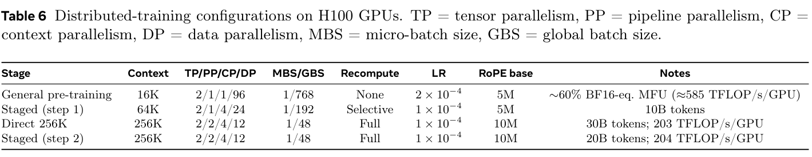
我们直接评估保存的 54 个基础 checkpoint，累计处理的通用预训练 token 从 0.04T 到 4.19T。每个 checkpoint 都以基础模型形式评估并生成回答，不进行 SFT、指令微调或其他后训练适配。Checkpoint 之间保持相同的基准运行框架和评估设置，因此曲线反映预训练模型本身的能力变化。Token 位置由训练日志中的已消耗样本数乘以序列长度得到，从而在全局 batch size 逐步增加期间仍保持精确。所得轨迹见图 15。
评估使用固定子集，而非完整测试集：MMLU 为 1,425 项（每个学科 25 项），HellaSwag 为 1,004 项，其余基准为 50 至 200 项。GSM-Symbolic、Minerva Math 和 OpenBookQA 各使用 50 项，因此单个项目会令分数变化两个百分点。这三个基准的点间变化既反映采样噪声，也反映能力变化，只有总体趋势具有信息价值。
表 7 概括四个由五个 checkpoint 组成的窗口。第一和最后一列分别取最初和最后五个 checkpoint 的平均值；中间两列分别取以约 1.0T 和 2.5T token 为中心的五个 checkpoint 均值。分数以百分比报告。
每个基准从第一个窗口到最后一个窗口均有所改善，但提升速度不同。大部分收益出现在 2.5T token 之前：截至 2.5T 窗口，MMLU 已实现总提升的 92%，ARC-Challenge 为 88%，WinoGrande 为 84%。最后 1.7T token 使 MMLU 增加 2.58 个百分点、GSM8K 增加 1.97、WinoGrande 增加 2.84。代码和更难数学基准在同一区间继续提升，HumanEval 增加 7.08 个百分点，GSM-Symbolic 增加 14.80；但后者仅以 50 项衡量，不确定性较大。这些分化动态表明，仅靠广泛预训练，其边际收益越来越不均衡，因此促使我们在中期训练中采用面向能力的混合方案。
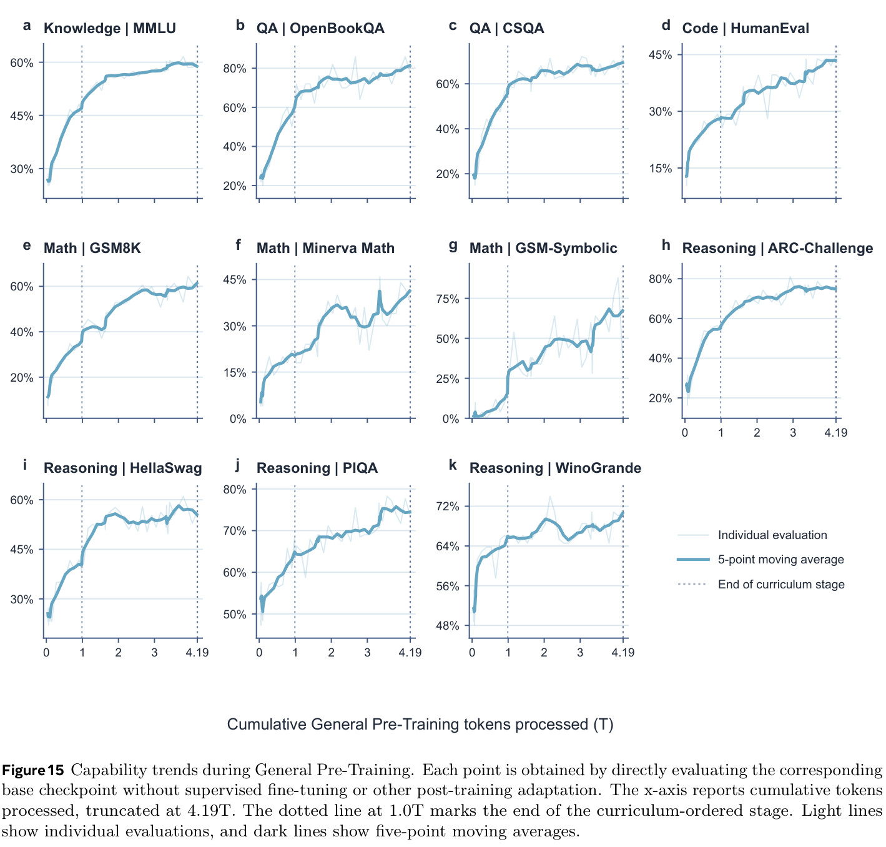
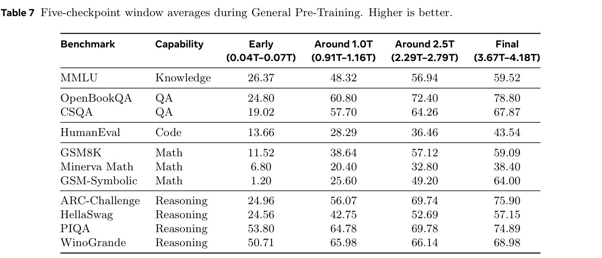
我们使用短程 SFT 探测，跟踪连续训练里程碑的下游能力。每个 checkpoint 都使用同一份精心整理的 SFT 语料快速适配，再在固定基准套件上评估。探测衡量每种初始化在轻量监督适配后激发的能力。因此，它不同于附录 A.2 的直接基础 checkpoint 评估。
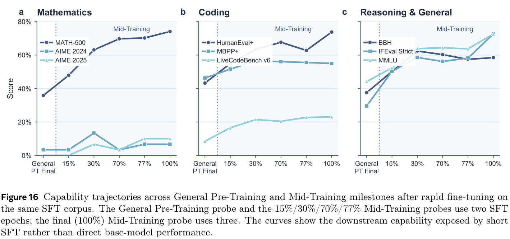
探测显示，进入中期训练后出现较大变化。从通用预训练结束到中期训练结束，MATH-500 从 35.83% 升至 74.12%，HumanEval+ 从 43.29% 升至 73.78%，IFEval Strict 从 29.57% 升至 72.64%，MMLU 从 44.17% 升至 72.63%。各基准并非在每个 checkpoint 都单调提升。
最后一次中期训练探测使用三个 SFT epoch，而此前探测使用两个，因此这些轨迹是下游潜力改善的诊断证据，并非严格匹配的因果消融。结合附录 A.2 的直接基础模型趋势，它们支持在完整后训练前使用面向能力的中期训练。
我们比较两个使用相同数据混合、训练 10B token 的 7B 训练。随机基线以随机顺序采样文档。课程训练首先将词汇复杂度分数极端的文档作为 outlier 排除；这些通常是损坏或乱码文本，而非有意义的困难样本。随后将剩余自然语言文档按词汇复杂度从低到高排序。代码与数学不以词汇复杂度作为难度代理，而是独立打乱，并按目标比例交错加入。
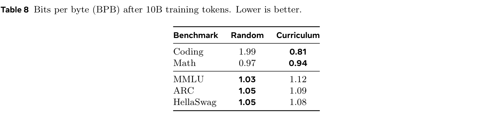
课程排序改善了代码 BPB（1.99 → 0.81）和数学 BPB（0.97 → 0.94）。通用基准
（接上页）（MMLU、ARC、HellaSwag）的 BPB 小幅增加 0.03–0.09，表明在这一 token 预算下，课程以少量通用知识获取损失为代价，加速了领域特定学习。
下列示例说明将词汇复杂度用作单一排序信号的局限。百分位位置在对应来源分片内重新计算，仅作为诊断位置报告；它们不是内在难度标签或生产元数据。
代码。第一个示例是基于 WFC 的网格构建程序。虽然包含丰富程序结构和环境特定逻辑，它仍位于排序低端（代码分片最前 0.01%）。
代码示例：排序低端
import wfc_implementation as wfci import mapUtils, interfaceUtils buildArea = interfaceUtils.requestBuildArea() tiles = np.array([[0,0,0,0], [0,1,0,0], [1,1,0,1]])
诊断位置：25,000 个文档中的最前 3 个。
相比之下，下列两行 NumPy 片段虽仅执行简单文件加载，却位于排序高端（最后 0.01%）。
代码示例：排序高端
import numpy as np
count_data = np.loadtxt("../BookSource/Chapter1_Introduction/data/txtdata.csv")
诊断位置：25,000 个文档中的最后 3 个。
这两个示例表明，表面词汇复杂度可能主要受导入、样板代码和 token 级变化影响，而非程序的算法内容。
数学。数学文本也存在同样问题。较长的组合编程题“Manhattan Wiring”位于排序低端（数学分片最前 0.11%），尽管它要求在障碍物约束与最小长度目标下构造互不相交的路径。
数学示例：排序低端
用绕过障碍物、互不相交的水平或垂直线连接两对标记单元格，同时使两条线的总长度最小。
诊断位置：55,743 个文档中的最前 63 个。
另一端，一行加法结合律陈述虽几乎不需数学推理，却位于排序高端（最后 0.01%）。
数学示例：排序高端
这说明了加法的结合律：(a + b) + c = a + (b + c)。
诊断位置：55,743 个文档中的最后 3 个。
数学示例进一步支持同一设计选择：词汇复杂度有助于高效排序通用语言数据，但并非代码或数学内容推理难度的可靠代理。因此，我们在整个课程式预训练中单独交错加入这两个领域。
中期训练采用全序列因果目标进行继续预训练（而非聊天模板监督）。指令记录序列化为原始上下文，agent 动作和环境观察均仍是下一 token 预测目标。
我们通过全池去重与数学错误过滤，产生约 5.3B 条记录（2.86T token）的候选池。再将该池采样为三种累积式上下文混合：
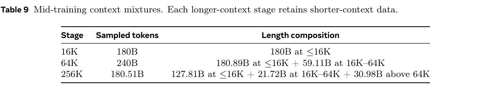
代码与数学在三个阶段分别占约 20%。256K 阶段将知识比例从 10.5% 提至 14.2%，agent 数据从 1.5% 提至 3.3%，同时将预训练回放从 13% 降至 9%。
推理来源规范化为统一 schema，并依据自包含性、答案证据和推理质量，分类为接受、重写、待处理、留出或拒绝。推理池约含 35M 个样本（38B token）。其中 34.7M 通过规则清洗直接保留；201K 个问题有价值但轨迹低质量的样本，由教师模型重建并在验证后重新接受。
指令数据收集自多个来源（包括来自 Tulu 和 FLAN 的数据）（Lambert et al., 2024; Wei et al., 2022），转换为适合预训练的上下文。部分单轮样本重写为多轮讨论，以提供顺序推理监督。
Agent 中期训练数据结合通用交互轨迹与软件工程轨迹。
对于通用交互轨迹，我们保留覆盖长程任务上下文、工具调用和环境反馈的高质量完整交互。我们还将保留轨迹重新表述为类似马尔可夫决策过程的单步决策样本。在每个决策点，任务描述、交互历史及当前环境反馈组成状态，模型以该状态为条件预测合适的下一动作。这将学习目标从复现完整状态转移序列，转向以状态为条件的动作选择，在完整轨迹信号之外提供更密集的逐步监督。
对于软件工程轨迹，我们根据是否存在真实执行环境采用不同过滤策略。无执行轨迹依据结构、补丁、shell／编辑、日志与行为证据筛选，而非自报运行结果。基于执行的轨迹则按真实执行结果、最后交互轮次反馈及交互轮次数联合评分与过滤。保留轨迹保存任务上下文、工具调用、观察、代码更改和最终回答。去重后，最终软件工程轨迹语料约含 129K 条记录（5.9B token）。这些轨迹采用全序列因果语言建模训练，agent 动作与环境观察均为下一 token 预测目标。
通用 SFT 数据由开源数据集和内部蒸馏样本组成，涵盖指令遵循、知识、代码、数学、科学、对话和推理。共享的质量选择与去污染过程见第 4.1 节；本附录记录针对领域的选择和实现细节。
我们在指令遵循、推理和其他能力上比较候选领域混合方案。长推理占比过高会降低指令遵循，因此我们迭代调整长推理、直接回答和指令遵循比例，再选择最终组成。
通用 SFT 数据中的推理成分，经过结构验证、答案质量审查和推理价值过滤，从 2,268,178 个候选中保留 1,307,175 个。接受样本除了可靠的最终答案，还必须包含连贯、完整且实质有用的推理。安全与多轮样本通过适合任务的结构检查，处理全过程中，推理内容与可见最终答案保持分离。
为隔离数据质量的作用，我们从同一基础 checkpoint 出发，使用同一 SFT 数据池的三个版本快速微调为对话模型。第一版仅做格式规范化和基本结构检查，不进行基于模型的质量过滤。第二版移除被判为需审查或删除的样本，同时保留广泛能力覆盖。第三版仅保留通过最严格质量、风格与能力检查的样本。这些数量指受控消融数据池，而非最终 SFT 语料。
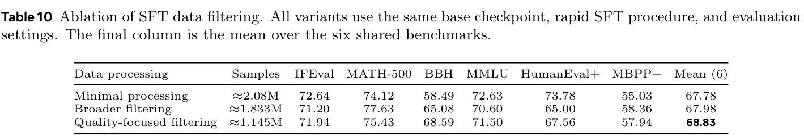
质量优先版本相比最少处理版本少用 44.9% 的样本，相比广泛过滤版本少用 37.5%。尽管规模更小，六个共享基准的平均分仍分别从 67.78 和 67.98 提高至 68.83。各任务并非都朝同一方向变化，但汇总结果表明，高质量数据比单纯增加数据量更有用。
我们比较两种引入 agent 监督的计划。顺序计划先用通用能力数据训练，再继续用 agent 数据训练。联合计划在整个 SFT 中交错加入通用与 agent 样本。候选训练评估更支持联合计划，最终训练采用这一计划。
交互 schema。Deep Research 系统指令如下：
你是一名深度搜索助手。你的主要职责是对任何主题开展严谨、多步骤、多来源的调查，涵盖广泛的开放领域问题和高度专业的学术查询。对于每个用户请求，你必须主动从可信且多样的来源查找并交叉核对信息，再将发现整合为全面、准确、结构清晰且客观的回答。当你收集到充分信息并准备提供确定回答时，用 <answer></answer> 标签包住整个最终答案。
交互提供两个工具：
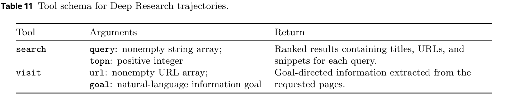
每个样本遵循 system → user → assistant → tool 消息序列，在最终 assistant 回答前按需重复 assistant—tool 交互。工具在顶层 tools 字段中声明；assistant 动作在 tool_calls 中包含工具名与 JSON 参数；每个环境返回是独立的 role=tool 消息，与前一调用配对。搜索观察采用排序结果列表，visit 观察则提供与指定目标相关的信息。最终回答包在 <answer>...</answer> 中。
思考样本在动作和最终答案前包含 assistant 推理。对应的不思考视图移除推理片段，保留用户请求、工具调用、观察和答案。
基于执行的轨迹构建与过滤。基于执行的来源池包含 34,269 条轨迹。我们要求有效且非空的工具调用、外部工具交互、工具观察和完整 finish 动作。移除含私有路径、类似秘密的字符串、空完成内容，或 finish 消息仍描述工作进行中的轨迹。首轮保留 30,914 条、拒绝 3,355 条：3,067 条涉及私有路径，254 条涉及秘密模式，34 条使用尚未完成的措辞。保留的全部 30,914 条通过 GLM-5.1 tokenizer 与监督边界预检，没有 tokenizer 错误或空目标。将视图限制在 8K–64K token，移除 900 条过长轨迹，得到 30,014 个基于执行的样本。
无执行轨迹构建、过滤与评分。无执行来源池包含 318,115 条轨迹。初始结构与安全门槛保留 281,237 个候选、拒绝 36,878 条：35,259 条涉及私有路径，1,361 条涉及秘密模式，258 条使用未完成 finish 措辞。GLM-5.1 分词产生 280,852 个 8K–64K 范围内候选。仅有结构有效性不足以保证无执行数据质量，因此我们通过模型辅助的规则迭代，构建针对来源的质量准则。硬性接纳标准要求存在补丁、同时包含 shell 和编辑动作、唯一且非空的 finish 动作、合理交互与目标长度，以及没有未经支持地声称未执行测试已通过。这一门槛拒绝 3,554 条轨迹，留下 277,298 个待评分候选。
评分函数对具有连贯补丁证据、互补 shell 与编辑行为、均衡工具与推理动作、密集文件路径及代码符号证据、足够 assistant 目标 token、信息丰富的文件与终端观察，以及有限观察裁剪的轨迹给出高分。对轮次或推理动作过多、严重裁剪、完成措辞不确定，或没有执行环境支持却声称运行成功的轨迹给出低分。我们选取前 30,000 条，并将每个仓库限制为 800 个样本，减少来源集中。选定子集最低质量分为 97，中位数为 97，第 95 百分位为 100。独立审计确认，所有选定样本都标记为无执行，且没有非法工具或空 finish 动作。
结构化工具映射与验证。质量选择在可追溯原生记录上进行，之后才转换训练格式。我们再将 30,014 条基于执行和 30,000 条无执行轨迹映射至 GLM-5.1 顶层 tools schema。外部 execute_bash 和 str_replace_editor 动作转换为结构化 assistant tool_calls；原生 think 动作转换为 reasoning_content；finish 动作转换为最终 assistant 回答。“Your thought has
（接上页）been logged.”（你的思考已记录）等内部确认被移除，连续 assistant 消息合并，有效观察保留为独立 tool 消息，末尾未配对的工具观察被丢弃。得到的 60,014 个软件工程候选通过强化结构检查，覆盖 JSON 有效性、顶层工具定义、工具调用—观察配对、重复标识符和完整 assistant 终止。
环境与 schema。我们通过两条独立收集路径，从终端任务环境收集终端 agent 轨迹，覆盖 Claude Opus 4.6 Thinking 和 GLM-5.2。按任务—环境标识，在每条路径内独立去重。每个任务运行在隔离 Docker 环境中，具有持久 shell 和一个结构化 bash 工具。Rollout 最多允许 64 个交互步骤，每个 assistant 轮次最多输出 4,096 token。命令超时为 180 秒，每条终端观察最多 12,000 字符。
Agent 通过预定义提交命令终止，随后在同一环境中执行 tests/test.sh，得到独立于模型自报完成情况的验证器结果。完整轨迹、运行摘要和来源清单均保留，使任务、收集路径、执行、交互轨迹和验证结果保持可追溯。
构建、过滤与来源规范化。原始 rollout 包含重复任务运行、错误工具协议、缺失容器或镜像、设置输出、运行框架生成的格式修复轮次、重复可见推理，以及末尾未配对观察。每条收集路径中，我们对每个任务环境最多保留两条有效轨迹，优先选择验证成功、其次更完整的运行。拒绝反复协议失败和基础设施失败，因为它们不代表有效任务交互。
每个 assistant 轮次都含 content，但只有部分轮次提供原生 reasoning_content。Claude Opus 4.6 Thinking 并非每轮都暴露 reasoning_content，GLM-5.2 则会。我们跨来源规范化这两个字段，避免重复监督。从模型可见内容移除设置输出、运行框架 Format error 修复和基础设施失败文本。对于原本会结束对话的终端观察，予以裁剪，使样本以完整 assistant 轮次结束。结构有效但失败的轨迹保留结果标签，以支持完整和仅成功两种物化视图。
物化训练视图。为后续受控 Agent-SFT 实验，我们从 Claude Opus 4.6 Thinking 和 GLM-5.2 收集路径物化配对来源视图。Claude 来源从 11,944 次原始运行中保留 11,653 条，包括 8,488 条验证成功和 3,165 条失败轨迹。GLM-5.2 来源从 11,351 条指针清单记录中保留 10,656 条，包括 7,260 条成功和 3,396 条失败轨迹。
打包前，识别工具的聊天模板与损失掩码预检验证工具渲染、assistant 监督边界、动作—观察闭合、序列长度和非空目标。接受、过长及渲染错误记录分别输出，而非静默截断或丢弃。
历史 checkpoint 比较考察面向推理的监督能否改善直接回答能力。一个以直接回答数据训练的基线 checkpoint，随后用直接回答样本与明确推理轨迹混合再训练。两个 checkpoint 均以不思考模式评估，因此比较衡量不暴露中间推理轨迹时的答案质量。
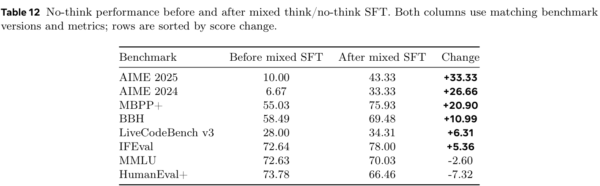
最大收益出现在数学推理与代码生成。AIME 2025 从 3/30 提至 13/30，AIME 2024 从 2/30 提至 10/30，MBPP+ 提高 20.90 个百分点。BBH、LiveCodeBench v3 和 IFEval 也改善。这些结果与推理监督将有用的问题求解行为迁移到直接回答推理的解释一致，即使中间推理不可见。
迁移取决于任务，并非普遍存在：MMLU 下降 2.60 个百分点，HumanEval+ 下降 7.32 个百分点。
该实验是观察性 checkpoint 比较，而非受控数据消融。混合数据训练可能在总训练 token、数据组成、checkpoint 历史和优化计划方面有所不同。
本附录记录表 3 网络环境结果、表 4 Binary Function Search 结果，以及内部软件工程和终端 agent 诊断所使用的评估运行框架。
深度研究评估使用启用思考的 ReAct 策略，最多执行 64 个搜索与阅读步骤。搜索查询通过 Serper 发出，以 Jina Search 作为回退；页面通过 Jina Reader 提取。检索材料由以直接回答（不思考）模式运行的 ZGCM-1 总结，最终答案由 Qwen3-30B-A3B-Instruct-2507 判断。若交互达到步骤预算，运行框架会要求根据至今累积的证据给出最终答案。
该协议下结果见表 3。其解释依赖搜索日期与可用性、提供商行为、页面提取、总结、评判设置和重试政策。
任务定义。Binary Function Search 评估 agent 能否根据自然语言描述，在移除符号的 ELF 二进制文件中定位目标函数。符号移除消除了大部分符号线索，编译器优化可能改变源码级结构。此外，多个函数可能共享相同字符串、常量或被调用函数。因此，agent 必须结合语义与结构证据区分函数。
输入与输出。每个任务指定目标二进制文件、架构、地址空间约定和目标函数的行为描述。描述可能包含多种语义证据：
多数情况下，描述仅覆盖上述证据类别中的一部分。下例给出一个真实任务的输入：
二进制路径：/chroot/build/binutils/nm 架构：x86_64 地址空间：elf_va 函数描述： 将一条符号记录格式化输出。它在基于大小的模式与常规模式之间选择， 可选地打印源码位置，解析重定位信息，对符号分类， 并将结果分派给当前启用的输出风格打印器。
要求输出精确的函数入口 ELF 虚拟地址，可附带置信度和简短理由：
{
"entry_va": "0x...",
"confidence": "low|medium|high",
"notes": "optional short rationale"
}
提交地址必须标识目标函数起始位置。文件偏移、运行时地址和函数内部指令均不是有效输出。confidence 与 notes 字段不影响正确性。
运行框架与工具。运行框架为 Binary Function Search 提供基于 Ghidra（National Security Agency, 2019）的环境。它开放 gcmd，这是访问 Ghidra 预处理结果的结构化接口。图 12 下方面板概括其六种动作：
运行框架管理 Ghidra 会话，将地址规范化为 ELF 虚拟地址约定，并验证提交地址对应函数边界。它还管理大型工具输出、检测重复的相同调用，并记录交互供审计。
Agent 工作流。图 12 概括了由四阶段组成的工作流。
I. 任务设置。第一个模型轮次前，运行框架将移除符号的二进制文件导入 Ghidra，恢复函数边界、控制流结构、引用、字符串、汇编列表和反编译表示。Agent 通过结构化工具接口访问这些信息。运行框架还提供函数清单摘要，如已分析函数的数量和大小分布，但不选择候选或为其排序。
II. 候选探索。agent 根据任务描述的信息，搜索 Ghidra 识别的函数集合。它枚举函数、应用结构过滤，并搜索字符串、反汇编、反编译文本或字节序列。随后从相关搜索结果沿引用追踪到使用它们的函数。这一过程将函数集合缩小为可信候选短名单。
III. 证据细化。对于每个入围候选，agent 检查函数元数据、反编译代码、引用、调用者、被调用者和汇编列表。它将收集的信息与任务描述中的证据类别比较，包括行为、控制流、调用、常量、错误和输出。它还检查调用者—被调用者关系，确定哪个函数直接负责所描述行为。若证据不足，工作流返回候选探索。Agent 继续搜索、追踪新引用或更新候选短名单。这两个阶段反复进行，直到证据足以支持最终决策。
IV. 提交与验证。收集充分证据并对选择有信心后，agent 提交候选函数入口地址。运行框架检查该地址是否对应 Ghidra 预处理识别的函数边界，将其规范化为 ELF 虚拟地址约定，并与隐藏真值比较。
在候选探索和证据细化期间，每个 agent 轮次根据任务和之前的观察，最多产生一次结构化 gcmd 调用。运行框架执行调用并将结果返回 agent，形成迭代的推理—动作—观察循环。工作流在 agent 提交答案或达到轮次上限时结束。
基准构建。我们从数千个开源 C/C++ 项目构建数据集。对每个保留项目，构建配对的移除符号与保留符号二进制文件：前者构成基准输入，后者的符号和源码映射用于识别编译后的函数入口，并构建隐藏真值。验证后的池包含来自 529 个项目的 11,767 个任务。
我们将源码定义映射到编译后入口，并保留项目原生、目的清晰且行为有意义而自包含的函数，如核心算法、解析器、状态转移、数据变换、验证逻辑、资源管理，以及主要请求或命令工作流。排除测试、捆绑依赖、thunk、别名、编译器生成变体、简单工具函数、占位函数、通用错误处理器，以及将所描述行为委托给其他函数的包装器。因此，各项目任务数不同。对于每个选定函数，生成模型根据其源码实现和支持证据产生行为描述。描述可以覆盖输入、状态变化、控制流决策、调用、常量、错误和外部可见效果，但省略函数名、源码位置、地址及可识别的名称变体。拒绝不完整记录、泄漏的标识符和无法映射到已验证函数入口的地址，并依据源函数、二进制地址和描述相似度去重。
报告评估从更大池中采样 50 个任务。我们从 10 个代表项目——tmux、tree、GNU Wget2、XZ Utils、YAJL、zlib、libuv、libgit2、nm 和 Lua——各随机选择五个任务。这一按项目平衡的子集覆盖多样软件领域与函数行为。
评分。仅当提交的 ELF 虚拟地址精确匹配某个接受的真值入口时，预测才正确。每个接受的替代入口必须是已验证的函数起点，且独立实现所描述的完整行为；相关调用者、被调用者、文件偏移、运行时地址和内部指令均不正确。提交错误入口或未能产生有效提交，均得零分，包括不收敛的重复工具使用以及运行时或 API 失败。所有比较模型使用相同的基于 Ghidra 的交互协议和任务预算，对全部 50 个任务计算准确率，不排除无效提交。
我们在 SWE-bench Verified（Jimenez et al., 2024; OpenAI, 2024）的固定内部 50 任务子集上，评估软件工程 agent 能力。评估分两阶段。首先，支持工具调用的 mini-SWE-agent v2（SWE-agent, 2026; Yang et al., 2024），使用结构化 bash 工具在各任务的 Docker /testbed 内执行交互修复轨迹，并提交 unified-diff 补丁。随后官方 SWE-bench 评分器应用补丁，并执行任务特定的 FAIL_TO_PASS 和 PASS_TO_PASS 测试。评估使用固定 Mini50 清单、temperature 为零、10 个各含五任务的分片、每任务 250 步交互预算，以及每轮 1,024-token 输出上限。ZGCM 评估服务使用 256K-token vLLM（vLLM Team, 2023）上下文窗口、字符串格式工具观察、自动工具选择，以及 GLM 工具调用与推理解析器。在这一协议下，完全审计过的最佳 ZGCM 家族评估解决 50 个任务中的 2 个（4.0%）。
我们在标准 89 任务 Terminal-Bench 2.0 基准（Merrill et al., 2026）上评估终端 agent 能力，使用任务特定 Docker 镜像和 Harbor（Harbor Framework Team, 2026）执行与验证。启用思考、采用 GLM XML 协议的终端 agent，通过持久 bash(command) 工具交互，每任务最多 64 步，每轮输出上限 4,096 token，temperature 为零，top-p 为 0.95，每命令超时 180 秒，每任务超时一小时。vLLM 推理服务使用 128K-token 上下文窗口、GLM-5.1 工具解析器和 GLM-4.5 推理解析器。89 个任务分为四个分片，每任务尝试一次。仅受预先声明的基础设施故障或验证器超时影响的任务，在缓存 warmup 后以相同参数重跑。在该协议下，完全审计过的最佳 ZGCM 家族评估解决 89 个任务中的 2 个（2.25%）。
原子能力评估（ACE）以比汇总基准更细的粒度诊断模型行为。框架包括 18 类、183 项原子能力和 2,503 个可执行探测样例。本附录说明分类体系、评分方法、验证过程和类别级结果。
ACE 遵循四项设计原则。（P1）原子性。每项能力有狭窄语义边界，使失败能定位具体行为，而不仅是宽泛领域。（P2）探测多样性。每项能力以多种表面形式、三个由作者指定的难度等级（L1–L3）测试，降低对单一措辞的敏感性。（P3）意图感知评分。仅当格式是目标行为时，评估器才严格匹配回答；否则提取并评分实质答案，同时规范化非语义变化。（P4）可追溯性。每个决策都关联探测样例、参考答案、评分政策、提取答案和失败记录。
ACE 在 18 个能力类别中，将模型行为拆解为 183 项原子能力。每项原子能力针对一个具体行为，使用表面形式和难度不同的多个探测样例评估。表 13 概括分类体系的范围与分配。2,503 个探测样例包含 835 个 L1、835 个 L2 和 833 个 L3。这些标签表示三个逐渐增加的探测难度等级。
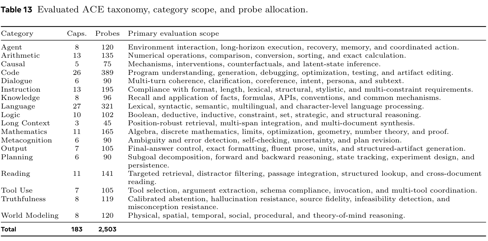
表 14 展示这些难度等级如何落实到一项原子能力。示例来自 Tool Use 类别的参数提取能力：L1 提取单个标量参数，L2 将单位转换与多个参数结合，L3 构造嵌套列表和对象参数。
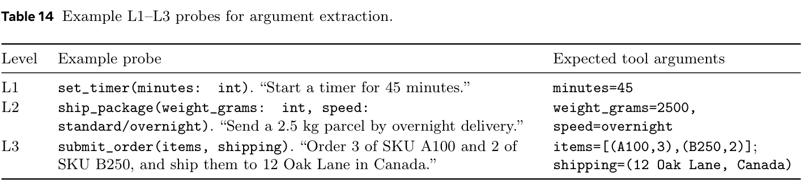
ACE 为每个探测样例选择针对目标能力的评分器。2,503 个样例中，2,155 个（86.1%）采用确定性评分。数值评分器识别答案标记、最后一行、框选表达式、单位和等价分数。字符串评分器接受带引号和 embedding 句中的答案，多项选择评分器仅在审计过的答案位置匹配字母。严格的全回答匹配仅用于明确测试格式、长度或无额外文本的任务。代码探测使用抽象语法树检查或隔离单元测试，工具使用探测依据 JSON Schema 验证参数。其余 348 个（13.9%）样例的正确性无法用可靠可执行标准表达，因此自动流水线调用独立模型和预定义二元评分准则。两条评分路径在同一自动流水线中执行；人工审查仅限基准构建和离线验证。探测结果聚合为具有 L1–L3 分解的原子能力分数，用于定位改善与退化；类别级汇总则概括更广泛模式。
我们通过迭代的人类—LLM 协同设计构建基准。在分类体系层面，LLM 提出拆解、边界情况和缺失维度，研究者将建议整合为有明确评估目标的能力。在探测层面，LLM 起草问题、参考答案、难度变体和对抗样例。研究者验证每项是否隔离了目标能力，并修订歧义或混杂项目。在评分层面，LLM 有两个角色。首先，将评估规范转换为候选答案提取器、验证器、静态分析和任务特定测试；研究者在评估前验证并冻结这些组件。其次，在运行时，LLM 充当基于评分准则样例的自动评判器。
图 17 在全部 18 个能力类别上，比较 ZGCM-7B 与参考模型。
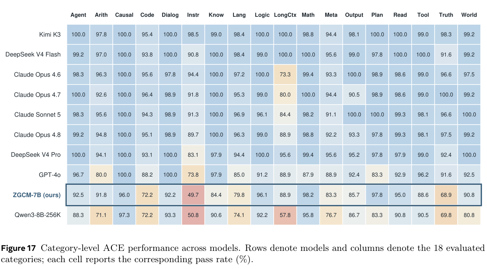
ZGCM-7B 表现最好的类别是数学（98.18%）、规划（97.78%）、逻辑（96.08%）、因果推理（96.00%）和阅读（95.04%）。最弱的类别是指令遵循（49.74%）、真实性（68.91%）、代码（72.24%）和语言（79.75%）。热图还表明，它与最强参考模型的差距集中在少数类别，而非分散于整个能力空间。
相比同等规模的 Qwen3-8B-256K，ZGCM-7B 最大优势体现在长上下文处理（+31.11 个百分点）、算术（+20.74）、规划（+14.45）和世界建模（+10.00）。
基准通过反复评分审计、跨模型回放、回归测试和独立交叉核对改进。这些检查暴露了歧义和评分错误，并在后续评估前修复。改进过程并非完全自主：需要人类专家裁决分歧、验证能力边界、检查系统性失败模式，以及批准对探测样例和评分器的实质更改。实践中，纯模型驱动迭代不足以完成工作，因为它可能重复既有假设或忽略相关错误；因此，有效的基准演化依赖持续的人类指导与监督。
ACE 衡量结构化的原子能力集合，而非完整端到端应用表现。结果依赖探测覆盖与评分质量，基于准则的 LLM 评判可能仍有残余偏置。因此，我们将 ACE 用作领域基准和应用级评估的诊断补充，而非模型质量的单一综合度量。
本附录记录第 6.2 节所依据的任务特定自主程度准则和个体贡献者评分。评估涵盖七个研发领域中的 11 类任务。数据工程包括数据清洗、数据获取和合成数据生成。基础设施工程包括算子设计、训练与推理框架设计和资源平台管理。其余
（接上页）领域为模型架构设计、学习算法设计、实验与监控、模型评估和部署工程。
九位核心贡献者分别对每类任务给出一个评分，共 99 个评分。报告表中以数字标识贡献者，每个标识在全部任务中指同一贡献者。评估反映贡献者判断，不应视为标准化能力测量。
准则根据人类与 AI 之间的责任分配、适应工作流的能力以及人工干预需求，区分五个等级。L1 描述单个步骤辅助；L2 描述预定义工作流执行；L3 引入自适应执行，在重大决策点需人类批准；L4 描述在人类定义目标与约束内自主迭代。L5 将自主性扩展至识别研究目标，并协调跨研发阶段的持续工作。
等级描述自主程度，而非生产力、输出质量或科学新颖性。更高自主性不一定意味着更好结果，较低等级的辅助也可能带来显著收益。L2 行为也可通过传统自动化实现；AI 评估中相关区别在于 agent 在工作流中扮演的角色。
L5 作为完全自主的参考，而非已经证明具备该能力的断言。它不意味着独立于既有知识、不受操作约束，或无需外部验证。它与 L4 的核心区别是自主形成目标和持续跨阶段协调。
下面针对任务的描述刻画每个等级的代表行为。狭窄子任务中展现的自主程度，不应被解释为整个任务类别都具有同等自主性。
L1：基本辅助。人类定义清洗规则并检查输出。AI 辅助单个正则表达式、格式操作或局部代码修正。
L2：部分自动化。AI 执行预定义清洗流水线，包括过滤、去重、敏感数据移除和固定格式质量报告。
L3：有条件自主。AI 识别分布异常和低质量样本，提出或调整清洗策略，并在数据选择或处理的重大更改前请求批准。
L4：高度自主。给定下游目标与约束，AI 制定可操作质量标准，并迭代清洗、选择和混合数据，根据下游结果验证决策。
L5：完全自主。AI 识别不断演变的数据质量需求，与获取、合成和训练协调，持续修订清洗策略，无需常规人工指导。
L1：基本辅助。人类识别、选择并整合数据来源。AI 辅助发现来源、下载脚本或接口文档。
L2：部分自动化。AI 使用预定义来源列表、接口和收集规则获取、解析并存储数据。
L3：有条件自主。AI 识别覆盖缺口、发现候选来源并调整收集计划。需要额外授权或重大支出的来源交由人类处理。
L4：高度自主。给定覆盖目标与访问约束，AI 独立发现、评估、整合并更新来源，根据观察到的缺口调整获取策略。
L5：完全自主。AI 识别新出现的数据需求，与其他研发阶段协调，持续演化获取工作流，同时遵守既定访问和使用约束。
L1：基本辅助。人类设计生成模板和质量标准。AI 按单条指令生成样本，由人类选择所得数据。
L2：部分自动化。AI 使用固定提示、模板或生成器大规模生成数据，再进行预定义过滤与去重。
L3：有条件自主。AI 根据覆盖缺口选择生成方法，并迭代提示、过滤器和数据混合。质量标准或生成目标的重大更改由人类批准。
L4：高度自主。给定训练目标，AI 自主生成、评估、过滤并重新采样合成数据，用下游结果指导连续迭代。
L5：完全自主。AI 识别新的合成目标，并与模型、算法和评估变化协调制定生成策略，无需常规人工指导而持续推进过程。
L1：基本辅助。人类确定模型结构、规模和模块配置。AI 提供参考信息、代码补全或局部实现建议。
L2：部分自动化。AI 实例化既有架构模板，生成配置和实现代码，并运行预定义架构变体。
L3：有条件自主。AI 根据目标与实验结果提出、实现并比较架构变体。重大结构或规模更改需人类批准。
L4：高度自主。给定能力目标与资源约束，AI 在多次迭代中自主搜索、实现、训练并验证架构。
L5：完全自主。AI 识别架构研究方向，与数据、学习算法和基础设施协调开发模型结构，无需常规人工指导。
L1：基本辅助。人类设计训练目标、损失、优化器和强化学习方法。AI 辅助实现与局部调试。
L2：部分自动化。AI 配置既有算法模板，评估预定义的损失、优化器、采样策略或强化学习过程组合。
L3：有条件自主。AI 分析训练结果并提出算法更改。学习目标或训练方法的重大更改需人类批准。
L4：高度自主。给定学习目标与约束，AI 在多轮实验迭代中独立设计、实现、评估并改进学习算法。
L5：完全自主。AI 识别算法研究问题，开发候选方法与支持分析，与其他研发阶段协调验证，无需常规人工指导。
L1：基本辅助。人类形成假设、设计并启动实验、监控进展。AI 辅助代码补全，或解释单个结果、状态消息和错误。
L2：部分自动化。AI 从固定模板启动实验，运行预定义参数扫描，并应用基于规则的监控、警报和重试。
L3：有条件自主。AI 设计常规实验、监控执行、诊断异常并调整实验计划。重大失败、预算更改和重大解释交由人类处理。
L4：高度自主。给定研究目标和资源限制，AI 自主规划、执行、监控、排障并分析连续实验，保留证据与结论记录。
L5：完全自主。AI 识别研究问题、形成假设、在操作约束内分配资源，并根据实验结论确定后续研究方向。
L1：基本辅助。人类设计、实现并调试算子。AI 提供代码补全、接口解释或局部性能建议。
L2：部分自动化。AI 使用既有模板生成或修改算子，并运行固定正确性和性能基准。
L3：有条件自主。AI 识别瓶颈、提出专用算子，并实现与验证候选方案。重大硬件特定更改需人类批准。
L4：高度自主。给定正确性和性能目标，AI 在指定硬件环境中自主设计、实现、编译、调优并修复算子。
L5：完全自主。AI 识别算子与硬件协同设计机会，随着模型、编译器和硬件变化演化实现与优化策略。
L1：基本辅助。人类构建框架并连接组件。AI 辅助配置、集成代码和错误解释。
L2：部分自动化。AI 配置标准框架与流水线，执行预定义构建、集成测试和任务编排。
L3：有条件自主。AI 根据工作负载调整并行策略与运行配置，并诊断常规框架问题。重大框架更改需人类批准。
L4：高度自主。给定训练与推理目标，AI 独立改进框架组件，并验证并行执行、编译、运行行为和流水线组织的更改。
L5：完全自主。AI 识别系统设计目标，在模型与硬件变化期间持续重构并验证框架，与更广泛研发工作流协调改进。
L1：基本辅助。人类申请和分配资源、提交任务并维护环境。AI 建议命令或解释单个失败。
L2：部分自动化。AI 执行预定义资源工作流，包括环境设置、排队、任务重试和基于规则的抢占。
L3：有条件自主。AI 动态平衡工作负载、隔离不健康节点并迁移任务。对其他租户影响较大或涉及重大资源的动作需人类批准。
L4：高度自主。给定工作负载目标与资源限制，AI 预测需求、调整容量、从故障恢复，并优化放置、通信和集群利用率。
L5：完全自主。AI 识别平台级改进目标，跨集群与硬件类型协调调度和配置，持续使平台适应演变中的研发需求。
L1：基本辅助。人类选择基准、设计评估过程并检查结果。AI 辅助单个脚本、指标解释或局部分析。
L2：部分自动化。AI 运行预定义评估流水线，产生指标比较、可视化和结构化报告。
L3：有条件自主。AI 自适应调查弱点、聚类失败样例并开展后续诊断。评估目标更改或重大判断需人类审查。
L4：高度自主。给定评估目标，AI 设计并验证额外测试、进行对抗评估，并迭代调查模型弱点，包括检查针对基准的过拟合。
L5：完全自主。AI 识别新出现的评估需求，与模型开发协调，持续制定评估标准和基准，保持与各项主张相适应的验证。
L1：基本辅助。人类打包模型、配置环境、部署服务、扩容并回滚。AI 为单项操作提供脚本或建议。
L2：部分自动化。AI 执行预定义持续集成与交付流水线、服务配置、健康检查和回滚过程。
L3：有条件自主。AI 根据部署目标选择量化设置、实例配置和发布策略，并管理分阶段发布与监控。完整发布与重大回滚需人类批准。
L4：高度自主。给定质量、延迟、吞吐量和成本目标，AI 在授权范围内独立进行模型压缩、量化、服务优化、分阶段部署、扩容和回滚。
L5：完全自主。AI 识别演变中的部署目标，持续使部署与推理系统适应模型、流量和环境变化，并与训练、评估和资源管理协调。
表 15 报告完整贡献者评分。任务顺序与图 14 相同，各列标识核心贡献者 1–9。表格保留可能被汇总摘要掩盖的个体差异。
对于每个任务，图中将 L1–L5 编码为 1–5 后，报告九个评分的算术平均值和样本标准差。这些统计是有序等级回答的描述性总结，并不确立相邻等级间能力差异相等。误差条表示贡献者之间的差异，而非置信区间。图中个体点直接对应下表条目。
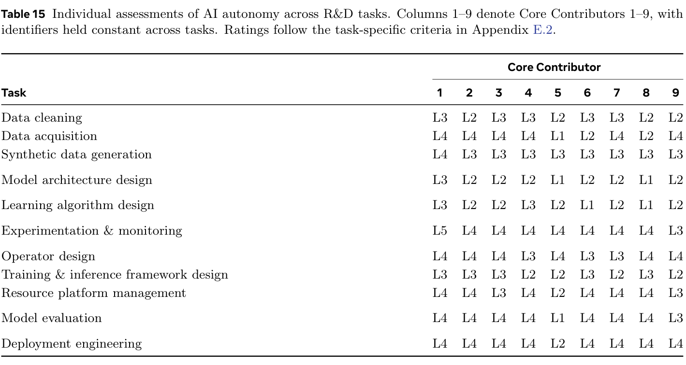
可复现性要求将数值结果同时绑定到四个层次：模型产物、评估数据、调用契约和评分实现。对于每个最终基准，评估记录应保留模型哈希、官方数据集 URL 与不可变修订版本、划分、提示包装、少样本示例、系统提示、聊天模板、模式控制设置、答案提取、指标实现、随机种子、超时、推理引擎与修订版本、硬件和原始输出位置。外部比较数值取自所引发布内容，而非统一重跑。
我们以不思考模式评估 ZGCM-1，采用确定性 decoding，temperature 为 0，top-p = 1.0，运行一次。
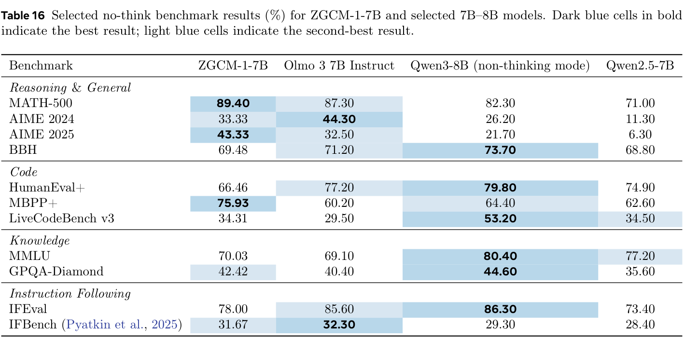